Q01 · 56.4 / Greenhouse Gases and Climate Change 正式分類
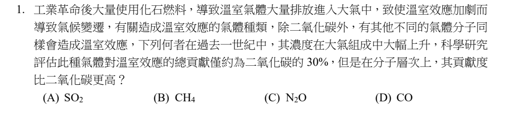
原卷PDF2 · 官方原答案PDF4 · 已核對生物釋疑PDF5–6
官方採計：B 原答案：B
未列於已取得112生物釋疑PDF5–6；依同年度原答案PDF4採計
主分類：Ch56 Conservation Biology and Global Change
56.4 / Greenhouse Gases and Climate Change
目錄行3787；條目起始印刷頁1278；實際目錄 PDF50
次分類：Ch52 An Introduction to Ecology and the Biosphere
52.1 / Global Climate Change
目錄行3483；條目起始印刷頁1170；實際目錄 PDF49
主分類理由：辨識甲烷的溫室效應與人為濃度增加，主列56.4溫室氣體與氣候變遷。
次分類理由：52.1全球氣候變遷保留大氣組成改變的生態背景；不另列單純分子化學。
科學說明：官方B。CH4為適合的選項；題給相對CO2約30%的總貢獻是原題估計，需區分年份、輻射強迫與單位質量或分子效力，不視為固定比例。
來源涵蓋範圍：Campbell支援所列分類框架；具名機制或科學界線由列示原始研究/官方來源補足。
教材正文：印刷1278／PDF1327、印刷1279／PDF1328、印刷1170／PDF1219
補充來源：S01
另行比較：56.4溫室氣體與52.1一般氣候孰主
辨識特定溫室氣體貢獻較直接屬56.4；52.1僅背景，30%保留為題給估計，沒有把當前年份比例強套原題。
結論：證據確認，分類疑義已解決。完整覆核紀錄
Q02 · 19.2 / General Features of Viral Replicative Cycles 正式分類
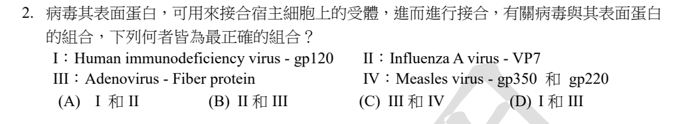
原卷PDF2 · 官方原答案PDF4 · 已核對生物釋疑PDF5–6
官方採計：D 原答案：D
未列於已取得112生物釋疑PDF5–6；依同年度原答案PDF4採計
主分類：Ch19 Viruses
19.2 / General Features of Viral Replicative Cycles
目錄行1196；條目起始印刷頁401；實際目錄 PDF40
次分類：Ch19 Viruses
19.1 / Structure of Viruses
目錄行1189；條目起始印刷頁399；實際目錄 PDF40
次分類：Ch19 Viruses
19.2 / Replicative Cycles of Animal Viruses
目錄行1202；條目起始印刷頁404；實際目錄 PDF40
主分類理由：考病毒表面蛋白辨識宿主受體的附著步驟，主列19.2一般複製週期。
次分類理由：19.1結構與19.2動物病毒週期分別保留表面蛋白及宿主範圍脈絡。
科學說明：官方D（I、III）。HIV gp120與腺病毒fiber具有附著功能；流感主要為HA，VP7屬輪狀病毒；gp350/220屬EBV而非麻疹。具名蛋白由補充來源支援。
來源涵蓋範圍：Campbell支援所列分類框架；具名機制或科學界線由列示原始研究/官方來源補足。
教材正文：印刷399／PDF448、印刷400／PDF449、印刷401／PDF450、印刷404／PDF453、印刷405／PDF454
補充來源：S02
另行比較：主病毒結構或主附著複製
題幹強調接合宿主受體，19.2一般週期為主；19.1結構與動物週期作次，具名蛋白由原始研究補足。
結論：證據確認，分類疑義已解決。完整覆核紀錄
Q03 · 55.2 / Ecosystem Energy Budgets 正式分類
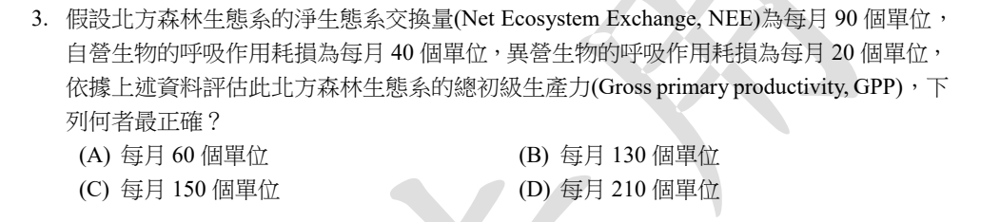
原卷PDF2 · 官方原答案PDF4 · 已核對生物釋疑PDF5–6
官方採計：C 原答案：C
未列於已取得112生物釋疑PDF5–6；依同年度原答案PDF4採計
主分類：Ch55 Ecosystems and Restoration Ecology
55.2 / Ecosystem Energy Budgets
目錄行3686；條目起始印刷頁1241；實際目錄 PDF50
主分類理由：題目須區分GPP、自營與全生態系呼吸，主列55.2生態系能量預算。
次分類理由：全部運算均屬同一最小條目，無另加次條目。
科學說明：官方C=150，採題意將90視為淨碳累積，GPP=90+40+20。Campbell用NEP=GPP−總呼吸；通量學常用NEE=總呼吸−GPP。若直接套後者且90為正，得GPP=−30，與題意不合。保留NEE名稱及符號未交代的衝突。
來源涵蓋範圍：Campbell支援所列分類框架；具名機制或科學界線由列示原始研究/官方來源補足。
教材正文：印刷1241／PDF1290、印刷1242／PDF1291
補充來源：S01
另行比較：55.2能量預算或55.4碳循環
加回兩類呼吸的核心是生產力預算，主55.2；NEE/NEP符號差異已由教材及NOAA查證，保留官方150，不以改題消除差異。
結論：證據確認，分類疑義已解決。完整覆核紀錄
Q04 · 54.2 / Species with a Large Impact 正式分類
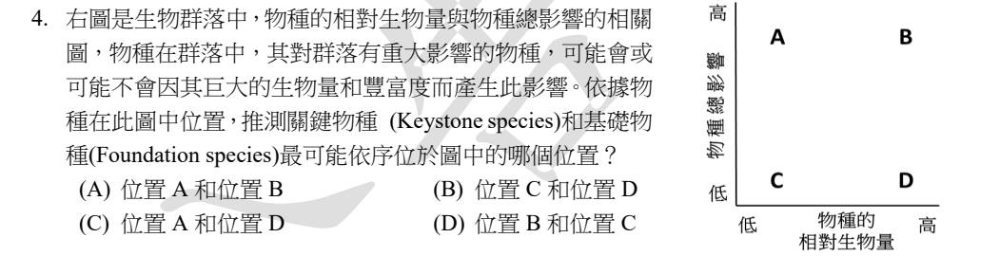
原卷PDF2 · 官方原答案PDF4 · 已核對生物釋疑PDF5–6
官方採計：A 原答案：A
未列於已取得112生物釋疑PDF5–6；依同年度原答案PDF4採計
主分類：Ch54 Community Ecology
54.2 / Species with a Large Impact
目錄行3620；條目起始印刷頁1225；實際目錄 PDF50
主分類理由：需讀原圖的生物量與總影響雙軸，辨識關鍵及基礎物種，主列54.2影響大的物種。
次分類理由：兩種物種都在同一最小條目，不以一般多樣性重複分類。
科學說明：官方A。圖A為低生物量高影響的關鍵物種；圖B為高生物量高影響的基礎物種。完整保留A–D四點及雙軸；並非所有基礎物種都僅由生物量定義。
來源涵蓋範圍：Campbell正文支援分類原理；原題與官方釋疑的假設、資料及措辭限制另見科學說明。
教材正文：印刷1225／PDF1274、印刷1226／PDF1275
補充來源：不需另加課本外具名機制來源
另行比較：群落多樣性或影響大的物種
原圖A低量高影響、B高量高影響直接對應54.2 Species with a Large Impact；完整圖軸與四點已讀，排除一般多樣性。
結論：證據確認，分類疑義已解決。完整覆核紀錄
Q05 · 19.1 / Structure of Viruses 正式分類
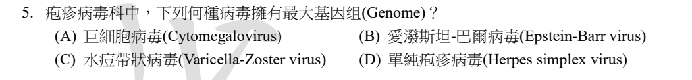
原卷PDF2 · 官方原答案PDF4 · 已核對生物釋疑PDF5–6
官方採計：A 原答案：A
未列於已取得112生物釋疑PDF5–6；依同年度原答案PDF4採計
主分類：Ch19 Viruses
19.1 / Structure of Viruses
目錄行1189；條目起始印刷頁399；實際目錄 PDF40
主分類理由：比較疱疹病毒的基因組大小，主列19.1病毒結構中病毒基因組部分。
次分類理由：不是人類基因組比較，無須將21章Genome Size列為主次。
科學說明：官方A。在四個人類疱疹病毒選項中CMV基因組最大，約230–240kb，EBV約170kb、HSV約150kb、VZV約125kb；株別長度可異。不把此題擴張為整個疱疹病毒類群最大者。
來源涵蓋範圍：Campbell支援所列分類框架；具名機制或科學界線由列示原始研究/官方來源補足。
教材正文：印刷399／PDF448、印刷400／PDF449
補充來源：S03
另行比較：19.1病毒結構或21.3基因組大小
比較四種病毒核酸大小，19.1內病毒基因組最直接；21.3主要真核基因組比較過寬。最大限定題列四種。
結論：證據確認，分類疑義已解決。完整覆核紀錄
Q06 · 10.2 / Tracking Atoms Through Photosynthesis 正式分類
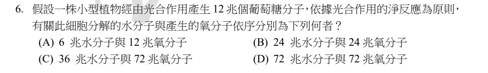
原卷PDF2 · 官方原答案PDF4 · 已核對生物釋疑PDF5–6
官方採計：D 原答案：D
未列於已取得112生物釋疑PDF5–6；依同年度原答案PDF4採計
主分類：Ch10 Photosynthesis
10.2 / Tracking Atoms Through Photosynthesis
目錄行634；條目起始印刷頁189；實際目錄 PDF37
次分類：Ch10 Photosynthesis
10.3 / Linear Electron Flow
目錄行656；條目起始印刷頁197；實際目錄 PDF37
主分類理由：計算光合作用淨反應的水與氧係數，主列10.2光合作用原子追蹤。
次分類理由：10.3線性電子流保留水光解及氧來源，可解釋淨耗水與總光解量不同。
科學說明：官方D。依題明定淨反應，每葡萄糖淨耗6H2O並產6O2，12兆對應72兆與72兆。若分解指光系統II實際光解，產6O2須12H2O，即144兆水；題目把分解與淨耗水混用，兩者分開。
來源涵蓋範圍：Campbell正文支援分類原理；原題與官方釋疑的假設、資料及措辭限制另見科學說明。
教材正文：印刷190／PDF239、印刷191／PDF240、印刷197／PDF246、印刷198／PDF247
補充來源：不需另加課本外具名機制來源
另行比較：淨反應原子追蹤或光反應為主
題明定淨反應所以10.2為主；10.3補充實際水裂解，72兆淨耗與144兆總裂解不能混同，分類與科學限制均保留。
結論：證據確認，分類疑義已解決。完整覆核紀錄
Q07 · 52.1 / Regional and Local Effects on Climate 正式分類
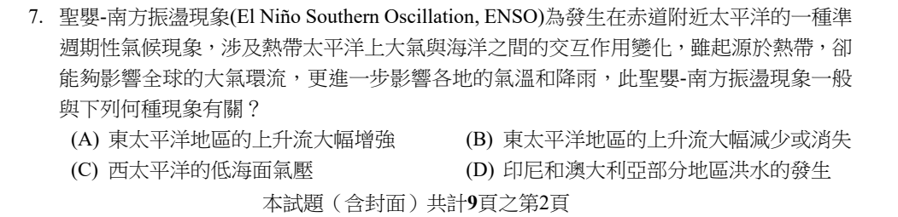
原卷PDF2 · 官方原答案PDF4 · 已核對生物釋疑PDF5–6
官方採計：B 原答案：B
未列於已取得112生物釋疑PDF5–6；依同年度原答案PDF4採計
主分類：Ch52 An Introduction to Ecology and the Biosphere
52.1 / Regional and Local Effects on Climate
目錄行3474；條目起始印刷頁1167；實際目錄 PDF49
主分類理由：核心為海氣耦合改變區域氣候，主列52.1氣候的區域與局部效應。
次分類理由：海洋環流是此條目內的Bodies of Water內容，無另造ENSO目錄節點。
科學說明：官方B。El Niño暖相時信風減弱，東太平洋上升流減弱或停止。ENSO含冷暖相，不能把暖相特徵套到所有ENSO狀態；具名機制由NOAA補足。
來源涵蓋範圍：Campbell支援所列分類框架；具名機制或科學界線由列示原始研究/官方來源補足。
教材正文：印刷1168／PDF1217、印刷1169／PDF1218、印刷1170／PDF1219
補充來源：S01
另行比較：52.1區域氣候或52.3水域生物群系
海流信風與氣候耦合屬52.1；NOAA證實暖相上升流減弱，排除只按太平洋字樣列生物群系。
結論：證據確認，分類疑義已解決。完整覆核紀錄
Q08 · 8.4 / The Activation Energy Barrier 正式分類
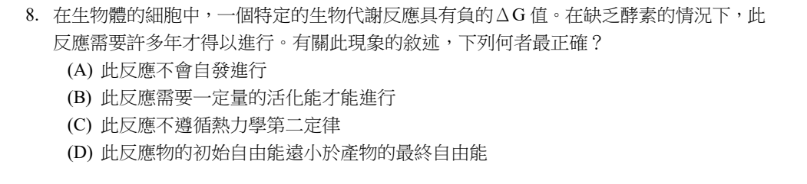
原卷PDF3 · 官方原答案PDF4 · 已核對生物釋疑PDF5–6
官方採計：B 原答案：B
未列於已取得112生物釋疑PDF5–6；依同年度原答案PDF4採計
主分類：Ch08 An Introduction to Metabolism
8.4 / The Activation Energy Barrier
目錄行517；條目起始印刷頁153；實際目錄 PDF37
次分類：Ch08 An Introduction to Metabolism
8.2 / Free-Energy Change, ΔG
目錄行491；條目起始印刷頁147；實際目錄 PDF37
次分類：Ch08 An Introduction to Metabolism
8.4 / How Enzymes Speed Up Reactions
目錄行520；條目起始印刷頁154；實際目錄 PDF37
主分類理由：負ΔG仍極慢的直接原因是活化能障礙，主列8.4活化能障礙。
次分類理由：8.2自由能與8.4酵素加速反應保留熱力學和動力學的區別。
科學說明：官方B。自發性不保證速率快；反應需跨越活化能障礙，酵素降低障礙而不改變反應ΔG。負ΔG亦不違反第二定律。
來源涵蓋範圍：Campbell正文支援分類原理；原題與官方釋疑的假設、資料及措辭限制另見科學說明。
教材正文：印刷147／PDF196、印刷153／PDF202、印刷154／PDF203
補充來源：不需另加課本外具名機制來源
另行比較：自由能自發性或活化能障礙
負ΔG已給定，問慢速原因在8.4活化能；8.2及酵素降低障礙作同章次項，無待解分類。
結論：證據確認，分類疑義已解決。完整覆核紀錄
Q09 · 11.1 / Local and Long-Distance Signaling 正式分類
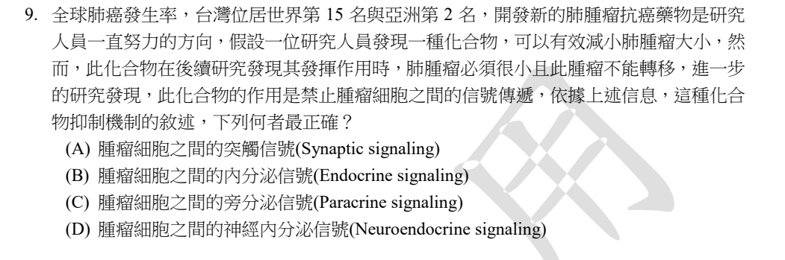
原卷PDF3 · 官方原答案PDF4 · 已核對生物釋疑PDF5–6
官方採計：C 原答案：C
未列於已取得112生物釋疑PDF5–6；依同年度原答案PDF4採計
主分類：Ch11 Cell Communication
11.1 / Local and Long-Distance Signaling
目錄行698；條目起始印刷頁215；實際目錄 PDF38
次分類：Ch12 The Cell Cycle
12.3 / Loss of Cell Cycle Controls in Cancer Cells
目錄行792；條目起始印刷頁248；實際目錄 PDF38
主分類理由：判斷局部腫瘤細胞間訊號的作用距離，主列11.1局部與遠距訊號。
次分類理由：12.3癌細胞失去週期控制保留腫瘤生長的應用背景。
科學說明：官方C。題設最符合旁分泌；小且未轉移本身不是旁分泌的充分實驗證明，這是四選一模型判斷。背景流行率是原題敘述，未當作現行流行病學資料。
來源涵蓋範圍：Campbell正文支援分類原理；原題與官方釋疑的假設、資料及措辭限制另見科學說明。
教材正文：印刷215／PDF264、印刷216／PDF265、印刷248／PDF297、印刷249／PDF298
補充來源：不需另加課本外具名機制來源
另行比較：癌細胞或局部訊號為主
答案需依作用距離判旁分泌，11.1為主；癌細胞為12.3應用次項，沒有由腫瘤大小推斷唯一實驗機制。
結論：證據確認，分類疑義已解決。完整覆核紀錄
Q10 · 13.2 / Sets of Chromosomes in Human Cells 正式分類
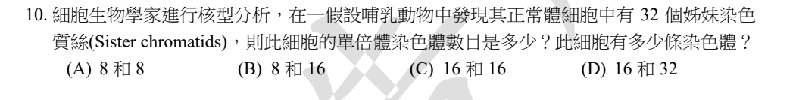
原卷PDF3 · 官方原答案PDF4 · 已核對生物釋疑PDF5–6
官方採計：B 原答案：B
未列於已取得112生物釋疑PDF5–6；依同年度原答案PDF4採計
主分類：Ch13 Meiosis and Sexual Life Cycles
13.2 / Sets of Chromosomes in Human Cells
目錄行824；條目起始印刷頁256；實際目錄 PDF38
次分類：Ch12 The Cell Cycle
12.1 / Distribution of Chromosomes During Eukaryotic Cell Division
目錄行763；條目起始印刷頁236；實際目錄 PDF38
主分類理由：求單倍體數與體細胞染色體數，主列13.2人類細胞染色體組套並套用假設哺乳類。
次分類理由：12.1染色體分配條目釐清每條複製染色體含兩條姊妹染色質絲。
科學說明：官方B。在正常二倍體核型分析、姊妹絲尚未分離的假設下，32姊妹絲=16條染色體，n=8。不能只按DNA分子數宣稱32條染色體。
來源涵蓋範圍：Campbell正文支援分類原理；原題與官方釋疑的假設、資料及措辭限制另見科學說明。
教材正文：印刷256／PDF305、印刷257／PDF306、印刷236／PDF285
補充來源：不需另加課本外具名機制來源
另行比較：12.1染色質絲或13.2染色體組套
求n及染色體總數主13.2；12.1解釋32絲=16染色體。正常二倍體複製階段假設已明列。
結論：證據確認，分類疑義已解決。完整覆核紀錄
Q11 · 19.1 / Structure of Viruses 正式分類
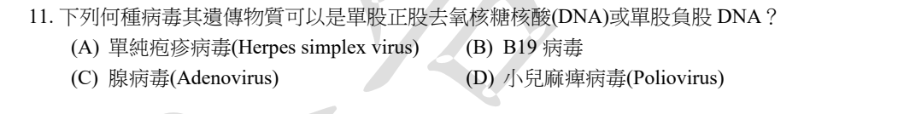
原卷PDF3 · 官方原答案PDF4 · 已核對生物釋疑PDF5–6
官方採計：B 原答案：B
未列於已取得112生物釋疑PDF5–6；依同年度原答案PDF4採計
主分類：Ch19 Viruses
19.1 / Structure of Viruses
目錄行1189；條目起始印刷頁399；實際目錄 PDF40
主分類理由：辨識病毒核酸為ssDNA及其股極性，主列19.1病毒結構。
次分類理由：本題不是宿主DNA複製機制，無另列16章。
科學說明：官方B。Campbell表19.1列B19為ssDNA；ICTV確認其正負互補股可分別封裝。正負DNA是相對轉錄方向，不能直接套用正股RNA可作mRNA的意義。
來源涵蓋範圍：Campbell支援所列分類框架；具名機制或科學界線由列示原始研究/官方來源補足。
教材正文：印刷399／PDF448、印刷400／PDF449、印刷406／PDF455
補充來源：S04
另行比較：病毒核酸分類或DNA複製
表19.1與ICTV支持B19 ssDNA及正負股分別封裝，主19.1；不列宿主複製，正負股不混同mRNA可譯性。
結論：證據確認，分類疑義已解決。完整覆核紀錄
Q12 · 15.2 / Inheritance of X-Linked Genes 正式分類
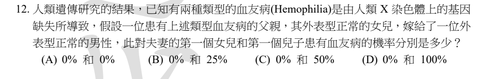
原卷PDF3 · 官方原答案PDF4 · 已核對生物釋疑PDF5–6
官方採計：C 原答案：C
未列於已取得112生物釋疑PDF5–6；依同年度原答案PDF4採計
主分類：Ch15 The Chromosomal Basis of Inheritance
15.2 / Inheritance of X-Linked Genes
目錄行945；條目起始印刷頁299；實際目錄 PDF39
次分類：Ch14 Mendel and the Gene Idea
14.2 / The Multiplication and Addition Rules Applied to Monohybrid Crosses
目錄行882；條目起始印刷頁277；實際目錄 PDF38
主分類理由：以父女傳遞及兒女風險推論X連鎖隱性，主列15.2X連鎖基因遺傳。
次分類理由：14.2乘加法則保留以已知性別為條件的機率計算。
科學說明：官方C。患病父親的正常女兒在題設模型為帶因者，與正常男性生女患病0%、生兒患病50%。這是女兒與兒子各自條件機率，不再乘性別1/2；不是所有血友病變異皆屬基因缺失。
來源涵蓋範圍：Campbell正文支援分類原理；原題與官方釋疑的假設、資料及措辭限制另見科學說明。
教材正文：印刷299／PDF348、印刷300／PDF349、印刷277／PDF326
補充來源：不需另加課本外具名機制來源
另行比較：機率或X連鎖遺傳為主
性別特異風險主15.2，乘加法作次；女0、兒1/2為性別條件機率，不是總出生事件機率。
結論：證據確認，分類疑義已解決。完整覆核紀錄
Q13 · 19.3 / Viral Diseases in Animals 正式分類
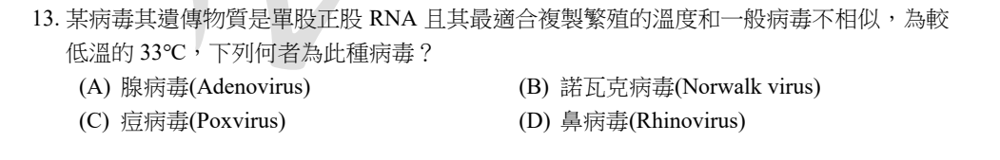
原卷PDF3 · 官方原答案PDF4 · 已核對生物釋疑PDF5–6
官方採計：D 原答案：D
未列於已取得112生物釋疑PDF5–6；依同年度原答案PDF4採計
主分類：Ch19 Viruses
19.3 / Viral Diseases in Animals
目錄行1212；條目起始印刷頁408；實際目錄 PDF40
次分類：Ch19 Viruses
19.1 / Structure of Viruses
目錄行1189；條目起始印刷頁399；實際目錄 PDF40
主分類理由：由病原與適合溫度辨識鼻病毒，主列19.3動物病毒疾病。
次分類理由：19.1病毒結構及表19.1的正股RNA分類保留核酸線索。
科學說明：官方D。Campbell確認鼻病毒ssRNA可作mRNA；原始研究支持許多鼻病毒分離株在33–35°C較37°C複製旺盛，且與宿主先天反應有關。不是所有病毒或鼻病毒株只有單一最佳溫度。
來源涵蓋範圍：Campbell支援所列分類框架；具名機制或科學界線由列示原始研究/官方來源補足。
教材正文：印刷399／PDF448、印刷400／PDF449、印刷406／PDF455、印刷408／PDF457、印刷409／PDF458
補充來源：S05
另行比較：病毒結構或溫度病原辨識
鼻病毒及上呼吸道適溫辨識主19.3；核酸表19.1為次，33–35°C結果與株/宿主條件分開記錄。
結論：證據確認，分類疑義已解決。完整覆核紀錄
Q14 · 21.6 / Widespread Conservation of Developmental Genes Among Animals 正式分類
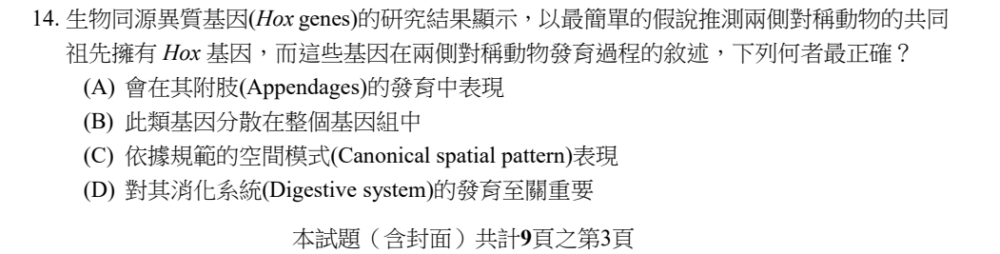
官方採計：C 原答案：C
維持原答案C
主分類：Ch21 Genomes and Their Evolution
21.6 / Widespread Conservation of Developmental Genes Among Animals
目錄行1362；條目起始印刷頁463；實際目錄 PDF40
次分類：Ch18 Regulation of Gene Expression
18.4 / Pattern Formation: Setting Up the Body Plan
目錄行1155；條目起始印刷頁384；實際目錄 PDF39
主分類理由：共同祖先Hox及跨兩側對稱動物的保守表現是主軸，主列21.6動物發育基因廣泛保守性。
次分類理由：18.4身體計畫的模式形成保留軸向及節段調控的發育機制。
科學說明：官方C；同年度釋疑PDF5維持C。Hox控制前後軸及節段身分的空間表現，也可能參與附肢與內臟等發育；不能將C理解為排除其他功能，亦非所有動物基因簇皆完整不分散。
來源涵蓋範圍：Campbell正文支援分類原理；原題與官方釋疑的假設、資料及措辭限制另見科學說明。
教材正文：印刷463／PDF512、印刷464／PDF513、印刷384／PDF433、印刷385／PDF434、印刷386／PDF435
補充來源：不需另加課本外具名機制來源
另行比較：18.4模式形成或21.6保守發育基因
共同祖先和兩側對稱動物範圍主21.6，發育模式次18.4；釋疑PDF5維持C且不否定Hox其他功能。
結論：證據確認，分類疑義已解決。完整覆核紀錄
Q15 · 43.3 / Helper T Cells: Activating Adaptive Immunity 正式分類
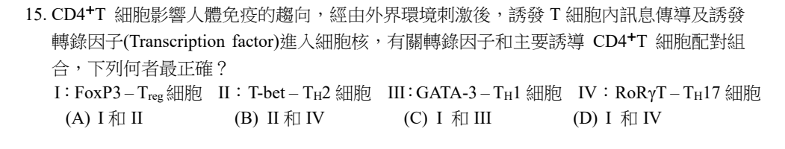
原卷PDF4 · 官方原答案PDF4 · 已核對生物釋疑PDF5–6
官方採計：D 原答案：D
未列於已取得112生物釋疑PDF5–6；依同年度原答案PDF4採計
主分類：Ch43 The Immune System
43.3 / Helper T Cells: Activating Adaptive Immunity
目錄行2896；條目起始印刷頁963；實際目錄 PDF47
次分類：Ch18 Regulation of Gene Expression
18.4 / Sequential Regulation of Gene Expression During Cellular Differentiation
文字TOC寫Cell Differentiation；PDF39真實標題為Cellular Differentiation。印刷起始383相同；原文字檔保留。 目錄行1152；條目起始印刷頁383；實際目錄 PDF39
主分類理由：四個轉錄因子與CD4細胞亞群配對，主列43.3輔助T細胞。
次分類理由：18.4細胞分化中基因表現的序列調控提供主控轉錄因子框架，非宣稱Campbell具名列出四因子。
科學說明：官方D（I、IV）。FoxP3–Treg、T-bet–Th1、GATA3–Th2、RORγt–Th17；II與III顛倒。原始研究補足具名配對；亞群可塑性與共表現不改本題經典主要誘導的判準。
來源涵蓋範圍：Campbell支援所列分類框架；具名機制或科學界線由列示原始研究/官方來源補足。
教材正文：印刷963／PDF1012、印刷964／PDF1013、印刷383／PDF432、印刷384／PDF433
補充來源：S06
另行比較：一般轉錄或免疫亞群分化
主43.3輔助T細胞；18.4分化為框架次項。PDF39的Cellular與文字TOC的Cell差異已保留，具名四因子配對由研究支援。
結論：證據確認，分類疑義已解決。完整覆核紀錄
Q16 · 17.3 / Alteration of mRNA Ends 正式分類
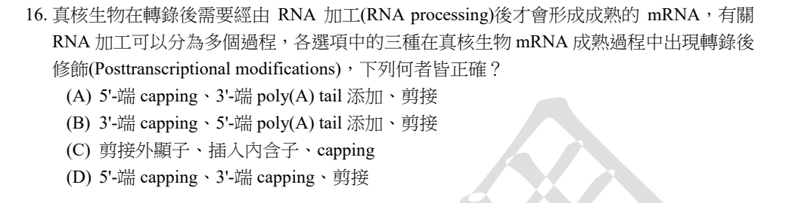
原卷PDF4 · 官方原答案PDF4 · 已核對生物釋疑PDF5–6
官方採計：A 原答案：A
未列於已取得112生物釋疑PDF5–6；依同年度原答案PDF4採計
主分類：Ch17 Gene Expression: From Gene to Protein
17.3 / Alteration of mRNA Ends
目錄行1059；條目起始印刷頁345；實際目錄 PDF39
次分類：Ch17 Gene Expression: From Gene to Protein
17.3 / Split Genes and RNA Splicing
目錄行1062；條目起始印刷頁345；實際目錄 PDF39
主分類理由：三個加工項目中兩者為mRNA端修飾，主列17.3mRNA兩端改變。
次分類理由：同概念的分裂基因與RNA剪接列為最小次條目，不因同章而省略。
科學說明：官方A。一般真核mRNA為5′cap、3′poly(A)與去內含子剪接；保留典型加工模型，不概括所有真核轉錄本或無內含子的mRNA。
來源涵蓋範圍：Campbell正文支援分類原理；原題與官方釋疑的假設、資料及措辭限制另見科學說明。
教材正文：印刷345／PDF394、印刷346／PDF395
補充來源：不需另加課本外具名機制來源
Q17 · 43.3 / Immunization 正式分類
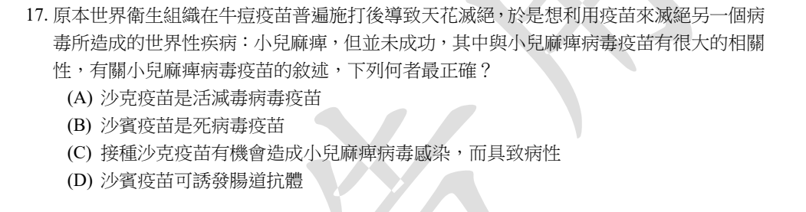
原卷PDF4 · 官方原答案PDF4 · 已核對生物釋疑PDF5–6
官方採計：D 原答案：D
未列於已取得112生物釋疑PDF5–6；依同年度原答案PDF4採計
主分類：Ch43 The Immune System
43.3 / Immunization
目錄行2908；條目起始印刷頁968；實際目錄 PDF47
次分類：Ch19 Viruses
19.3 / Viral Diseases in Animals
目錄行1212；條目起始印刷頁408；實際目錄 PDF40
主分類理由：比較接種疫苗的免疫性質與腸道抗體，主列43.3免疫接種。
次分類理由：19.3動物病毒疾病保留脊髓灰質炎病原與疫苗預防背景。
科學說明：官方D。Salk為不活化IPV；Sabin為口服活減毒OPV，可誘發腸道黏膜免疫。合格IPV不會由疫苗病毒複製導致感染；OPV的罕見疫苗相關及衍生病毒風險與全球根除進程不可簡化成單一原因。
來源涵蓋範圍：Campbell支援所列分類框架；具名機制或科學界線由列示原始研究/官方來源補足。
教材正文：印刷968／PDF1017、印刷969／PDF1018、印刷408／PDF457
補充來源：S07
另行比較：19.3病原或43.3免疫接種
考IPV/OPV免疫性質，主43.3；CDC黏膜免疫支援D，病毒疾病保留次項，不將歷史根除背景當現況。
結論：證據確認，分類疑義已解決。完整覆核紀錄
Q18 · 14.3 / Extending Mendelian Genetics for Two or More Genes 正式分類
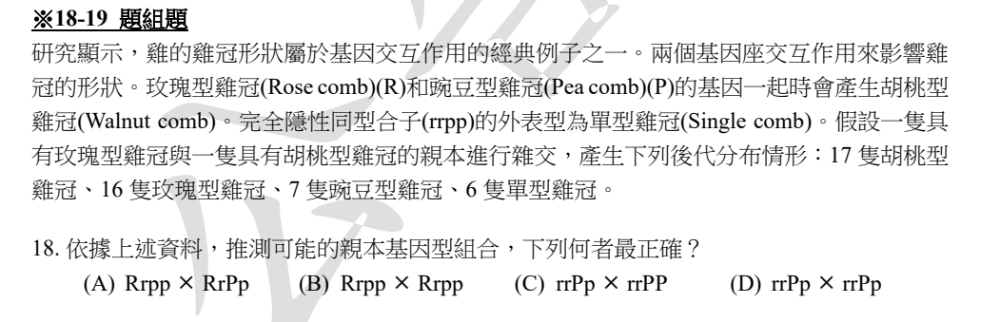
原卷PDF4 · 官方原答案PDF4 · 已核對生物釋疑PDF5–6
官方採計：A 原答案：A
未列於已取得112生物釋疑PDF5–6；依同年度原答案PDF4採計
主分類：Ch14 Mendel and the Gene Idea
14.3 / Extending Mendelian Genetics for Two or More Genes
目錄行895；條目起始印刷頁281；實際目錄 PDF38
次分類：Ch14 Mendel and the Gene Idea
14.1 / The Law of Independent Assortment
目錄行875；條目起始印刷頁274；實際目錄 PDF38
次分類：Ch14 Mendel and the Gene Idea
14.2 / Solving Complex Genetics Problems with the Rules of Probability
目錄行885；條目起始印刷頁277；實際目錄 PDF38
主分類理由：用兩基因座交互作用解釋雞冠型，主列14.3兩個以上基因的孟德爾延伸。
次分類理由：14.1獨立分配及14.2複雜遺傳機率保留親本反推與3:3:1:1比例。
科學說明：官方A。Rrpp×RrPp可得胡桃3/8、玫瑰3/8、豌豆1/8、單冠1/8；17:16:7:6為有限樣本近似。原題的雞冠對應作為給定模型，不偽稱Campbell用同一雞冠例。
來源涵蓋範圍：Campbell正文支援分類原理；原題與官方釋疑的假設、資料及措辭限制另見科學說明。
教材正文：印刷281／PDF330、印刷282／PDF331、印刷274／PDF323、印刷275／PDF324、印刷277／PDF326
補充來源：不需另加課本外具名機制來源
另行比較：單基因遺傳或兩基因交互作用
兩基因表型互作主14.3，獨立分配與機率作次；重新計算3:3:1:1，與題給近似數量相容。
結論：證據確認，分類疑義已解決。完整覆核紀錄
Q19 · 14.3 / Extending Mendelian Genetics for Two or More Genes 正式分類
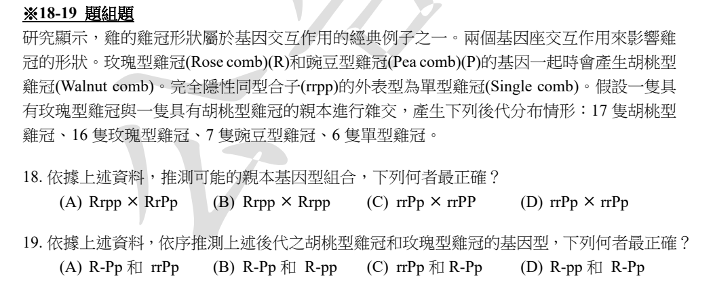
原卷PDF4 · 官方原答案PDF4 · 已核對生物釋疑PDF5–6
官方採計：B 原答案：B
未列於已取得112生物釋疑PDF5–6；依同年度原答案PDF4採計
主分類：Ch14 Mendel and the Gene Idea
14.3 / Extending Mendelian Genetics for Two or More Genes
目錄行895；條目起始印刷頁281；實際目錄 PDF38
次分類：Ch14 Mendel and the Gene Idea
14.1 / The Law of Independent Assortment
目錄行875；條目起始印刷頁274；實際目錄 PDF38
主分類理由：由同一雙基因模型辨識胡桃及玫瑰型後代，主列14.3兩基因以上交互作用。
次分類理由：14.1獨立分配保留親本只能提供一個P來源的推論。
科學說明：官方B。由Rrpp×RrPp得胡桃R-Pp、玫瑰R-pp；R-可為RR或Rr。完整保留18–19共用背景及前題親本資訊，避免把P-直接視為PP。
來源涵蓋範圍：Campbell正文支援分類原理；原題與官方釋疑的假設、資料及措辭限制另見科學說明。
教材正文：印刷281／PDF330、印刷282／PDF331、印刷274／PDF323、印刷275／PDF324
補充來源：不需另加課本外具名機制來源
另行比較：一般機率或基因型與交互表型
主14.3，以親本Pp×pp限制後代Pp/pp；確認R-Pp及R-pp，完整題組資訊保留。
結論：證據確認，分類疑義已解決。完整覆核紀錄
Q20 · 19.2 / Replicative Cycles of Animal Viruses 正式分類
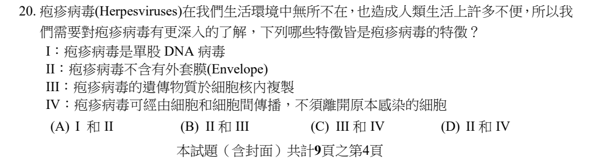
原卷PDF4 · 官方原答案PDF4 · 已核對生物釋疑PDF5–6
官方採計：C 原答案：C
未列於已取得112生物釋疑PDF5–6；依同年度原答案PDF4採計
主分類：Ch19 Viruses
19.2 / Replicative Cycles of Animal Viruses
目錄行1202；條目起始印刷頁404；實際目錄 PDF40
次分類：Ch19 Viruses
19.1 / Structure of Viruses
目錄行1189；條目起始印刷頁399；實際目錄 PDF40
主分類理由：考核內複製與細胞間散播，主列19.2動物病毒複製週期。
次分類理由：19.1結構保留dsDNA與有包膜的組合判讀。
科學說明：官方C（III、IV）。疱疹病毒有包膜及dsDNA，基因組核內複製，可由細胞間直接傳播；不須離開原感染細胞應理解為不必先釋放至細胞外液，病毒仍須進入相鄰細胞。
來源涵蓋範圍：Campbell支援所列分類框架；具名機制或科學界線由列示原始研究/官方來源補足。
教材正文：印刷399／PDF448、印刷400／PDF449、印刷404／PDF453、印刷405／PDF454、印刷406／PDF455
補充來源：S03
另行比較：病毒結構或複製傳播
核內複製與細胞間傳播主19.2，dsDNA包膜為次；直接傳播不等同永遠不離開原細胞的字面含義。
結論：證據確認，分類疑義已解決。完整覆核紀錄
Q21 · 16.1 / Building a Structural Model of DNA 正式分類
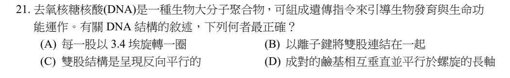
原卷PDF5 · 官方原答案PDF4 · 已核對生物釋疑PDF5–6
官方採計：C 原答案：C
未列於已取得112生物釋疑PDF5–6；依同年度原答案PDF4採計
主分類：Ch16 The Molecular Basis of Inheritance
16.1 / Building a Structural Model of DNA
目錄行1000；條目起始印刷頁317；實際目錄 PDF39
主分類理由：雙股DNA空間構造為主軸，主列16.1建立DNA結構模型。
次分類理由：四選項均在同一最小條目，無另加DNA複製。
科學說明：官方C。兩股反向平行，鹼基間主要為氫鍵；B-DNA鄰近鹼基對間距約3.4Å，一圈約34Å，不能混為3.4Å一圈。鹼基對平面大致垂直長軸，原D敘述不成立。
來源涵蓋範圍：Campbell正文支援分類原理；原題與官方釋疑的假設、資料及措辭限制另見科學說明。
教材正文：印刷317／PDF366、印刷318／PDF367、印刷319／PDF368、印刷320／PDF369
補充來源：不需另加課本外具名機制來源
另行比較：分子化學或DNA结构模型
結構模型直接包含反向平行、氫鍵與34Å/3.4Å區別，主16.1，不加廣泛化學章。
結論：證據確認，分類疑義已解決。完整覆核紀錄
Q22 · 10.3 / Photosynthetic Pigments: The Light Receptors 正式分類
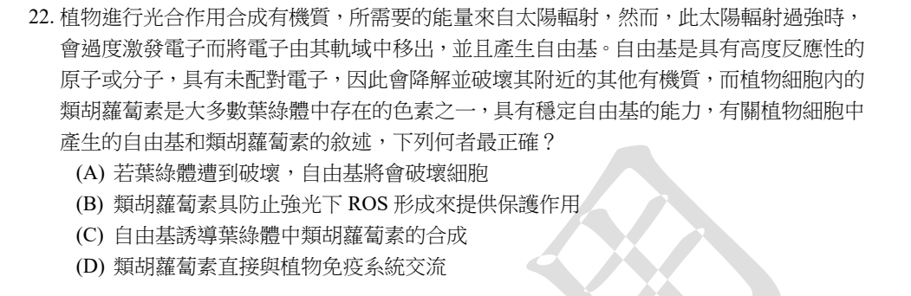
原卷PDF5 · 官方原答案PDF4 · 已核對生物釋疑PDF5–6
官方採計：B 原答案：B
未列於已取得112生物釋疑PDF5–6；依同年度原答案PDF4採計
主分類：Ch10 Photosynthesis
10.3 / Photosynthetic Pigments: The Light Receptors
目錄行647；條目起始印刷頁192；實際目錄 PDF37
次分類：Ch10 Photosynthesis
10.3 / Excitation of Chlorophyll by Light
目錄行650；條目起始印刷頁195；實際目錄 PDF37
主分類理由：類胡蘿蔔素的光保護功能，主列10.3光合色素。
次分類理由：10.3葉綠素受光激發保留過度激發與ROS的來源。
科學說明：官方B。教材明言吸收並耗散過量光能，避免葉綠素損傷及反應性氧分子形成；ROS不全是自由基，不能把所有活性氧都等同含未配對電子。
來源涵蓋範圍：Campbell正文支援分類原理；原題與官方釋疑的假設、資料及措辭限制另見科學說明。
教材正文：印刷193／PDF242、印刷194／PDF243、印刷195／PDF244
補充來源：不需另加課本外具名機制來源
另行比較：環境壓力或光合色素
教材195頁明列carotenoid photoprotection，主10.3色素、次光激發；氧化性分子與自由基範圍已區分。
結論：證據確認，分類疑義已解決。完整覆核紀錄
Q23 · 39.2 / A Survey of Plant Hormones 正式分類
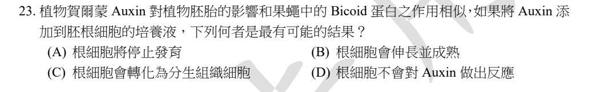
原卷PDF5 · 官方原答案PDF4 · 已核對生物釋疑PDF5–6
官方採計：B 原答案：B
未列於已取得112生物釋疑PDF5–6；依同年度原答案PDF4採計
主分類：Ch39 Plant Responses to Internal and External Signals
39.2 / A Survey of Plant Hormones
目錄行2557；條目起始印刷頁847；實際目錄 PDF45
次分類：Ch35 Vascular Plant Structure, Growth, and Development
35.5 / Morphogenesis and Pattern Formation
目錄行2329；條目起始印刷頁777；實際目錄 PDF44
主分類理由：外加auxin對根細胞生長的作用，主列39.2植物激素總覽中的Auxin。
次分類理由：35.5形態與模式形成保留題幹胚胎位置訊息及與Bicoid類比的背景。
科學說明：官方B仍採計，但效應依濃度、細胞發育狀態及處理時間而異，根尤其敏感；不足以由未交代劑量的外加auxin普遍推出伸長成熟。與Bicoid相似是模式訊號類比，非相同機制。
來源涵蓋範圍：Campbell支援所列分類框架；具名機制或科學界線由列示原始研究/官方來源補足。
教材正文：印刷847／PDF896、印刷848／PDF897、印刷849／PDF898、印刷777／PDF826、印刷778／PDF827
補充來源：S08
另行比較：39.2auxin或35.5胚胎模式
問添加auxin的細胞反應，以39.2為主；35.5保留類比。濃度敏感及根生長抑制證據限制B的普遍化，不影響激素分類確定。
結論：證據確認，分類疑義已解決。完整覆核紀錄
Q24 · 6.7 / Cell Walls of Plants 正式分類
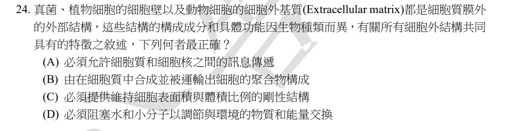
原卷PDF5 · 官方原答案PDF4 · 已核對生物釋疑PDF5–6
官方採計：B 原答案：B
未列於已取得112生物釋疑PDF5–6；依同年度原答案PDF4採計
主分類：Ch06 A Tour of the Cell
6.7 / Cell Walls of Plants
目錄行388；條目起始印刷頁118；實際目錄 PDF36
次分類：Ch06 A Tour of the Cell
6.7 / The Extracellular Matrix (ECM) of Animal Cells
目錄行391；條目起始印刷頁118；實際目錄 PDF36
次分類：Ch06 A Tour of the Cell
6.4 / The Endoplasmic Reticulum: Biosynthetic Factory
目錄行343；條目起始印刷頁104；實際目錄 PDF36
主分類理由：比較細胞外聚合物結構，以6.7植物細胞壁為主。
次分類理由：6.7動物ECM及6.4內質網保留跨界比較與分泌合成路徑；真菌壁不冒造目錄條目。
科學說明：官方B。共同點是細胞合成成分構成胞外支架。原文細胞質中合成是寬泛說法：蛋白涉及ER/Golgi，纖維素可由質膜上的合成酶邊合成邊輸出，不是所有聚合物皆先在游離胞質完成。
來源涵蓋範圍：Campbell正文支援分類原理；原題與官方釋疑的假設、資料及措辭限制另見科學說明。
教材正文：印刷104／PDF153、印刷105／PDF154、印刷118／PDF167、印刷119／PDF168
補充來源：不需另加課本外具名機制來源
另行比較：細胞壁/ECM或分泌系統
主6.7細胞壁，次ECM與ER涵蓋比較；原B寬稱胞質合成不抹除膜上合成與ER/Golgi路徑。
結論：證據確認，分類疑義已解決。完整覆核紀錄
Q25 · 26.3 / Cladistics 正式分類
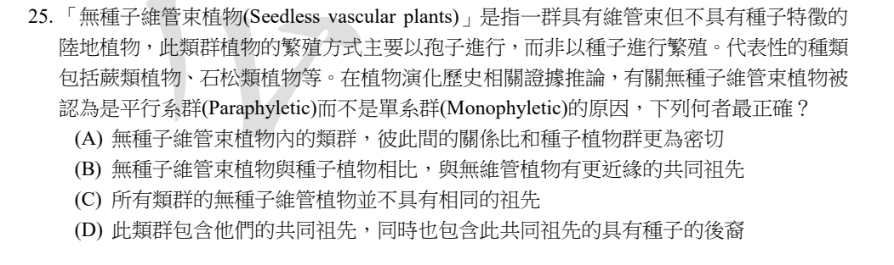
原卷PDF5 · 官方原答案PDF4 · 已核對生物釋疑PDF5–6
官方採計：D 原答案：D
未列於已取得112生物釋疑PDF5–6；依同年度原答案PDF4採計
主分類：Ch26 Phylogeny and the Tree of Life
26.3 / Cladistics
目錄行1659；條目起始印刷頁559；實際目錄 PDF42
次分類：Ch29 Plant Diversity I: How Plants Colonized Land
29.3 / Classification of Seedless Vascular Plants
目錄行1893；條目起始印刷頁631；實際目錄 PDF43
次分類：Ch29 Plant Diversity I: How Plants Colonized Land
29.1 / The Origin and Diversification of Plants
目錄行1870；條目起始印刷頁621；實際目錄 PDF43
主分類理由：題問並系與單系判準，主列26.3支序分類學。
次分類理由：29.1植物起源多樣化及29.3無種子維管植物分類保留實際類群範圍。
科學說明：官方D仍保留；已取得112釋疑未列本題。原D寫同時也包含具有種子的後裔，與無種子群排除種子植物的並系原因相反。正確定義為含共同祖先及部分而非全部後裔；原圖與原文不改。中文平行系群保留，另以並系群說明。
來源涵蓋範圍：Campbell正文支援分類原理；原題與官方釋疑的假設、資料及措辭限制另見科學說明。
教材正文：印刷559／PDF608、印刷560／PDF609、印刷561／PDF610、印刷631／PDF680、印刷632／PDF681、印刷621／PDF670、印刷622／PDF671
補充來源：不需另加課本外具名機制來源
另行比較：植物分類或支序判準
問題在paraphyletic定義，26.3為主，29章類群證據次；D原文與定義相反照留，官方採D不等於科學採納D字面。
結論：證據確認，分類疑義已解決。完整覆核紀錄
Q26 · 19.3 / Viral Diseases in Animals 正式分類
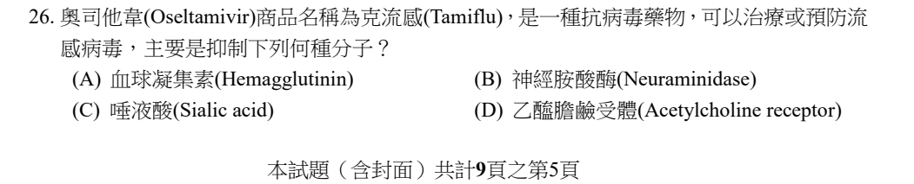
原卷PDF5 · 官方原答案PDF4 · 已核對生物釋疑PDF5–6
官方採計：B 原答案：B
未列於已取得112生物釋疑PDF5–6；依同年度原答案PDF4採計
主分類：Ch19 Viruses
19.3 / Viral Diseases in Animals
目錄行1212；條目起始印刷頁408；實際目錄 PDF40
次分類：Ch19 Viruses
19.2 / Replicative Cycles of Animal Viruses
目錄行1202；條目起始印刷頁404；實際目錄 PDF40
主分類理由：考抗病毒藥的酵素靶點，主列19.3動物病毒疾病。
次分類理由：19.2動物病毒週期保留抑制子代病毒釋放的作用階段。
科學說明：官方B。活性代謝物oseltamivir carboxylate抑制流感神經胺酸酶，阻礙病毒顆粒釋放；不是HA、唾液酸本身或乙醯膽鹼受體。教材提供藥物框架，具名靶點由FDA標示補足。
來源涵蓋範圍：Campbell支援所列分類框架；具名機制或科學界線由列示原始研究/官方來源補足。
教材正文：印刷408／PDF457、印刷409／PDF458、印刷404／PDF453
補充來源：S09
另行比較：一般酵素抑制或病毒治療
靶點與釋放週期的應用屬19.3/19.2，FDA明確支持neuraminidase；不因酵素字眼轉8章為主。
結論：證據確認，分類疑義已解決。完整覆核紀錄
Q27 · 19.2 / General Features of Viral Replicative Cycles 正式分類
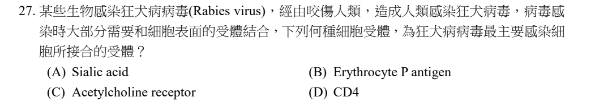
原卷PDF6 · 官方原答案PDF4 · 已核對生物釋疑PDF5–6
官方採計：C 原答案：C
未列於已取得112生物釋疑PDF5–6；依同年度原答案PDF4採計
主分類：Ch19 Viruses
19.2 / General Features of Viral Replicative Cycles
目錄行1196；條目起始印刷頁401；實際目錄 PDF40
次分類：Ch19 Viruses
19.2 / Replicative Cycles of Animal Viruses
目錄行1202；條目起始印刷頁404；實際目錄 PDF40
主分類理由：辨識病毒入侵時的宿主受體，主列19.2一般複製週期的受體專一性。
次分類理由：19.2動物病毒週期保留狂犬病的動物宿主背景。
科學說明：官方C。經典實驗支持菸鹼型乙醯膽鹼受體與狂犬病毒附著相關；狂犬病毒有多個候選受體，不能由此宣稱AChR是所有細胞唯一且必需的受體。
來源涵蓋範圍：Campbell支援所列分類框架；具名機制或科學界線由列示原始研究/官方來源補足。
教材正文：印刷401／PDF450、印刷404／PDF453、印刷405／PDF454
補充來源：S10
另行比較：神經肌肉受體或病毒入侵
題問病毒受體附著，主19.2；AChR非神經傳遞功能題，原始附著實驗與唯一受體主張分開。
結論：證據確認，分類疑義已解決。完整覆核紀錄
Q28 · 56.1 / Threats to Biodiversity 正式分類
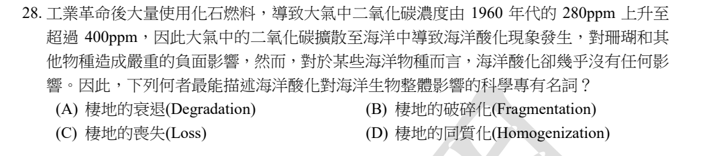
原卷PDF6 · 官方原答案PDF4 · 已核對生物釋疑PDF5–6
官方採計：A 原答案：A
未列於已取得112生物釋疑PDF5–6；依同年度原答案PDF4採計
主分類：Ch56 Conservation Biology and Global Change
56.1 / Threats to Biodiversity
目錄行3745；條目起始印刷頁1263；實際目錄 PDF50
次分類：Ch03 Water and Life
3.3 / Acidification: A Threat to Our Oceans
目錄行184；條目起始印刷頁53；實際目錄 PDF35
次分類：Ch56 Conservation Biology and Global Change
56.4 / Greenhouse Gases and Climate Change
目錄行3787；條目起始印刷頁1278；實際目錄 PDF50
主分類理由：在選項間辨識棲地品質降低而非空間破碎，主列56.1生物多樣性的威脅。
次分類理由：3.3海洋酸化與56.4溫室氣體保留化學原因及CO2背景。
科學說明：官方A。酸化使部分生物棲地適合度降低，不需每物種同等受害。原題1960年代280ppm與實測約317ppm不合；約280ppm指工業化前。原年份和數字保留，不據此取消分類。
來源涵蓋範圍：Campbell支援所列分類框架；具名機制或科學界線由列示原始研究/官方來源補足。
教材正文：印刷1263／PDF1312、印刷1264／PDF1313、印刷53／PDF102、印刷54／PDF103、印刷1278／PDF1327、印刷1279／PDF1328
補充來源：S01
另行比較：海洋酸化機制或棲地劣化類型
問環境效應名詞主56.1威脅，3.3酸化及56.4CO2次；1960/280ppm差異保留，非碎裂/同質化。
結論：證據確認，分類疑義已解決。完整覆核紀錄
Q29 · 18.4 / Cytoplasmic Determinants and Inductive Signals 正式分類
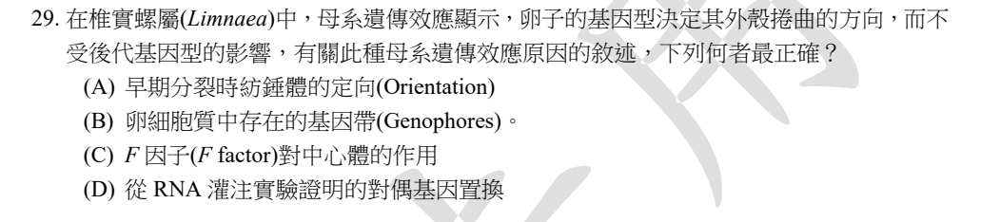
原卷PDF6 · 官方原答案PDF4 · 已核對生物釋疑PDF5–6
官方採計：A 原答案：A
未列於已取得112生物釋疑PDF5–6；依同年度原答案PDF4採計
主分類：Ch18 Regulation of Gene Expression
18.4 / Cytoplasmic Determinants and Inductive Signals
目錄行1149；條目起始印刷頁382；實際目錄 PDF39
次分類：Ch47 Animal Development
47.1 / Cleavage
目錄行3137；條目起始印刷頁1046；實際目錄 PDF48
主分類理由：題目核心為母源物質決定子代早期發育，主列18.4細胞質決定因子與誘導訊號。
次分類理由：47.1卵裂保留早期紡錘體方向與殼旋向的機制；不誤列胞器母系遺傳或基因組印記。
科學說明：官方A。經典母體效應由母親核基因型所產生的卵內成分影響卵裂手性；原文卵子的基因型容易與母親基因型混淆。Formin相關研究支持細胞骨架機制，但不把單一研究套成所有螺類完整機制。
來源涵蓋範圍：Campbell支援所列分類框架；具名機制或科學界線由列示原始研究/官方來源補足。
教材正文：印刷382／PDF431、印刷383／PDF432、印刷1046／PDF1095、印刷1047／PDF1096、印刷1048／PDF1097
補充來源：S11
另行比較：胞器母系遺傳、印記或母體效應
母親核基因透過卵內產物影響卵裂，主18.4細胞質決定因子、次47.1卵裂；排除粒線體遺傳與基因組印記。
結論：證據確認，分類疑義已解決。完整覆核紀錄
Q30 · 19.1 / Structure of Viruses 正式分類
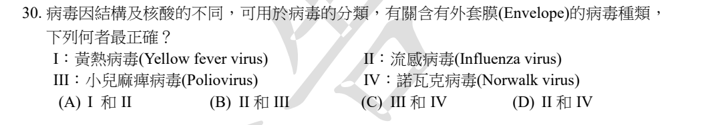
原卷PDF6 · 官方原答案PDF4 · 已核對生物釋疑PDF5–6
官方採計：A 原答案：A
未列於已取得112生物釋疑PDF5–6；依同年度原答案PDF4採計
主分類：Ch19 Viruses
19.1 / Structure of Viruses
目錄行1189；條目起始印刷頁399；實際目錄 PDF40
次分類：Ch19 Viruses
19.2 / Replicative Cycles of Animal Viruses
目錄行1202；條目起始印刷頁404；實際目錄 PDF40
主分類理由：題問有無包膜的病毒結構特徵，主列19.1病毒結構。
次分類理由：19.2動物病毒週期及表19.1保留不同病毒科的比較。
科學說明：官方A（I、II）。黃熱與流感有包膜；小兒麻痺與諾瓦克病毒無包膜。Campbell表19.1直接列前三者，Norwalk的杯狀病毒科特徵另由ICTV補足。
來源涵蓋範圍：Campbell支援所列分類框架；具名機制或科學界線由列示原始研究/官方來源補足。
教材正文：印刷399／PDF448、印刷400／PDF449、印刷404／PDF453、印刷405／PDF454、印刷406／PDF455
補充來源：S12
另行比較：結構或感染週期
有無包膜直接屬19.1；表19.1及ICTV補足四種對照，動物週期作次，不用其他年度病毒題答案。
結論：證據確認，分類疑義已解決。完整覆核紀錄
Q31 · 53.2 / Exponential Growth 正式分類
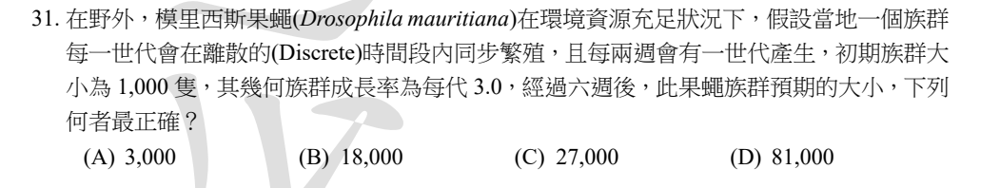
原卷PDF6 · 官方原答案PDF4 · 釋疑PDF5、釋疑PDF6
官方採計：C 原答案：C
維持原答案C
主分類：Ch53 Population Ecology
53.2 / Exponential Growth
目錄行3544；條目起始印刷頁1196；實際目錄 PDF49
次分類：Ch53 Population Ecology
53.2 / Changes in Population Size
目錄行3541；條目起始印刷頁1196；實際目錄 PDF49
主分類理由：資源充足下每代固定倍數成長，主列53.2指數成長。
次分類理由：同概念族群大小改變保留離散期間與成長率定義。
科學說明：官方C，釋疑PDF5–6明列三代1000×3³=27000。離散λ=3是每代倍數，不是增量r=3或連續時間r；Campbell連續指數式是分類框架，正式運算依本題及釋疑的離散式。
來源涵蓋範圍：Campbell正文支援分類原理；原題與官方釋疑的假設、資料及措辭限制另見科學說明。
教材正文：印刷1196／PDF1245、印刷1197／PDF1246
補充來源：不需另加課本外具名機制來源
另行比較：連續r、離散λ或邏輯斯成長
資源充足固定倍數主53.2；釋疑明定λ=3及三代，手算27000，不能代入連續r=3或加成4倍。
結論：證據確認，分類疑義已解決。完整覆核紀錄
Q32 · 19.3 / Viral Diseases in Animals 正式分類
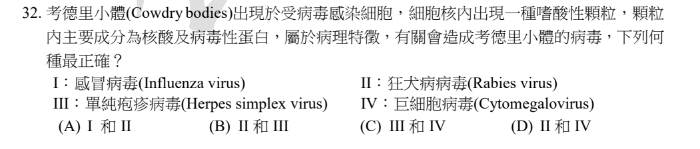
原卷PDF6 · 官方原答案PDF4 · 已核對生物釋疑PDF5–6
官方採計：C 原答案：C
未列於已取得112生物釋疑PDF5–6；依同年度原答案PDF4採計
主分類：Ch19 Viruses
19.3 / Viral Diseases in Animals
目錄行1212；條目起始印刷頁408；實際目錄 PDF40
次分類：Ch19 Viruses
19.2 / Replicative Cycles of Animal Viruses
目錄行1202；條目起始印刷頁404；實際目錄 PDF40
主分類理由：辨識病毒感染細胞的病理包涵體，主列19.3動物病毒疾病。
次分類理由：19.2動物病毒週期保留疱疹病毒核內複製的背景。
科學說明：官方C（III、IV）。HSV可見Cowdry A核內包涵體，CMV也有報告及教材記載；CMV常稱貓頭鷹眼，稱名不代表互斥。狂犬典型Negri小體在胞質。原文感冒病毒(Influenza)中英文不同，保留並註明流感。
來源涵蓋範圍：Campbell支援所列分類框架；具名機制或科學界線由列示原始研究/官方來源補足。
教材正文：印刷408／PDF457、印刷409／PDF458、印刷404／PDF453、印刷405／PDF454
補充來源：S03
另行比較：病原病理或核內複製
病理包涵體辨識主19.3，疱疹核內週期作次；研究確有CMV Cowdry A記載，名稱與貓頭鷹眼非互斥。
結論：證據確認，分類疑義已解決。完整覆核紀錄
Q33 · 19.2 / Replicative Cycles of Animal Viruses 正式分類
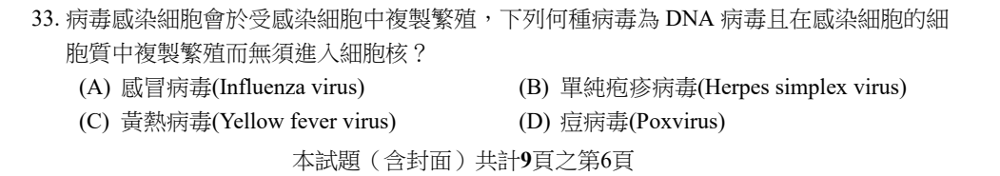
原卷PDF6 · 官方原答案PDF4 · 已核對生物釋疑PDF5–6
官方採計：D 原答案：D
未列於已取得112生物釋疑PDF5–6；依同年度原答案PDF4採計
主分類：Ch19 Viruses
19.2 / Replicative Cycles of Animal Viruses
目錄行1202；條目起始印刷頁404；實際目錄 PDF40
次分類：Ch19 Viruses
19.1 / Structure of Viruses
目錄行1189；條目起始印刷頁399；實際目錄 PDF40
主分類理由：考DNA病毒複製的細胞區室，主列19.2動物病毒複製週期。
次分類理由：19.1病毒結構及表19.1保留DNA/RNA判讀。
科學說明：官方D。痘病毒為dsDNA，複製在胞質進行，攜帶並編碼轉錄複製所需酵素。不能將此擴為所有DNA病毒都在胞質；原文Influenza中文感冒保留並指出是流感。
來源涵蓋範圍：Campbell支援所列分類框架；具名機制或科學界線由列示原始研究/官方來源補足。
教材正文：印刷399／PDF448、印刷400／PDF449、印刷404／PDF453、印刷405／PDF454、印刷406／PDF455
補充來源：S13
Q34 · 26.4 / Gene Duplications and Gene Families 正式分類
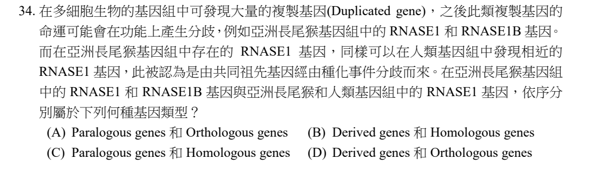
官方採計：A 原答案：A
維持原答案A
主分類：Ch26 Phylogeny and the Tree of Life
26.4 / Gene Duplications and Gene Families
目錄行1675；條目起始印刷頁565；實際目錄 PDF42
次分類：Ch21 Genomes and Their Evolution
21.5 / Duplication and Divergence of Gene-Sized Regions of DNA
目錄行1346；條目起始印刷頁455；實際目錄 PDF40
主分類理由：直接區分複製事件與種化事件形成的同源基因，主列26.4基因複製與基因家族。
次分類理由：21.5基因大小區段的複製與分歧保留副本功能分化。
科學說明：官方A，釋疑PDF6維持A。前者paralogous、後者orthologous，兩者都屬homologous。功能相同或不同不是嚴格定義，不能將釋疑的功能描述視為必然；RNASE1例的物種名稱照留。
來源涵蓋範圍：Campbell正文支援分類原理；原題與官方釋疑的假設、資料及措辭限制另見科學說明。
教材正文：印刷565／PDF614、印刷566／PDF615、印刷455／PDF504、印刷456／PDF505
補充來源：不需另加課本外具名機制來源
另行比較：同源基因定義或副本功能
26.4以事件區分ortholog/paralog為主，21.5分歧為次；不以功能必同/必異當定義，釋疑維持A已核對。
結論：證據確認，分類疑義已解決。完整覆核紀錄
Q35 · 43.4 / Evolutionary Adaptations of Pathogens That Underlie Immune System Avoidance 正式分類
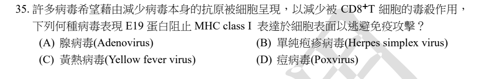
原卷PDF7 · 官方原答案PDF4 · 已核對生物釋疑PDF5–6
官方採計：A 原答案：A
未列於已取得112生物釋疑PDF5–6；依同年度原答案PDF4採計
主分類：Ch43 The Immune System
43.4 / Evolutionary Adaptations of Pathogens That Underlie Immune System Avoidance
目錄行2927；條目起始印刷頁971；實際目錄 PDF47
次分類：Ch43 The Immune System
43.2 / Antigen Recognition by T Cells
目錄行2886；條目起始印刷頁959；實際目錄 PDF47
次分類：Ch43 The Immune System
43.3 / Cytotoxic T Cells: A Response to Infected Host Cells
目錄行2902；條目起始印刷頁966；實際目錄 PDF47
主分類理由：病毒藉抑制MHC呈現逃避T細胞攻擊，主列43.4病原的免疫逃避適應。
次分類理由：43.2T細胞抗原辨識與43.3細胞毒T細胞保留MHC-I/CD8效應軸。
科學說明：官方A。題稱E19，原始研究常稱腺病毒E3/19K或gp19K，將MHC-I滯留於ER而降低表面呈現。不是否定MHC-I分子合成或等同攻擊T細胞本身。
來源涵蓋範圍：Campbell支援所列分類框架；具名機制或科學界線由列示原始研究/官方來源補足。
教材正文：印刷971／PDF1020、印刷972／PDF1021、印刷959／PDF1008、印刷960／PDF1009、印刷966／PDF1015、印刷967／PDF1016
補充來源：S14
另行比較：T細胞殺傷或病毒免疫逃避
目的為阻止MHC-I呈現，主43.4免疫逃避；43.2辨識與43.3毒殺作次，E19原稱與E3/19K研究名並存。
結論：證據確認，分類疑義已解決。完整覆核紀錄
Q36 · 21.6 / Comparing Genomes 正式分類
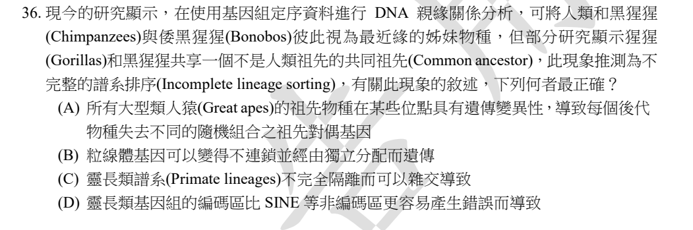
原卷PDF7 · 官方原答案PDF4 · 已核對生物釋疑PDF5–6
官方採計：A 原答案：A
未列於已取得112生物釋疑PDF5–6；依同年度原答案PDF4採計
主分類：Ch21 Genomes and Their Evolution
21.6 / Comparing Genomes
目錄行1359；條目起始印刷頁459；實際目錄 PDF40
次分類：Ch26 Phylogeny and the Tree of Life
26.3 / Phylogenetic Trees as Hypotheses
目錄行1668；條目起始印刷頁564；實際目錄 PDF42
主分類理由：比較靈長類基因組局部譜系差異，主列21.6基因組比較。
次分類理由：26.3親緣樹作為假說保留基因樹與物種樹的區別；不以雜交或HGT代換ILS。
科學說明：官方A。祖先多型跨種化保留，後續隨機保留或丟失形成基因樹不一致。人類與Pan類群為姊妹群，不是三物種兩兩同為最近姊妹；Gorillas應稱大猩猩，原中文猩猩照留。Campbell未在本次引用段具名解釋ILS，原始研究補足。
來源涵蓋範圍：Campbell支援所列分類框架；具名機制或科學界線由列示原始研究/官方來源補足。
教材正文：印刷459／PDF508、印刷460／PDF509、印刷461／PDF510、印刷462／PDF511、印刷564／PDF613、印刷565／PDF614
補充來源：S15
另行比較：雜交、HGT或祖先多型排序
原始大猩猩基因組研究支援ILS；主21.6基因組比較、次26.3親緣假說。局部基因樹不是整體物種祖先關係改變。
結論：證據確認，分類疑義已解決。完整覆核紀錄
Q37 · 43.1 / Innate Immunity of Vertebrates 正式分類
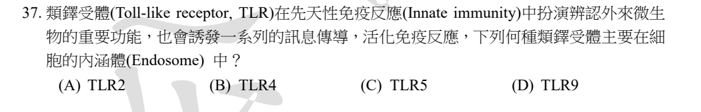
原卷PDF7 · 官方原答案PDF4 · 已核對生物釋疑PDF5–6
官方採計：D 原答案：D
未列於已取得112生物釋疑PDF5–6；依同年度原答案PDF4採計
主分類：Ch43 The Immune System
43.1 / Innate Immunity of Vertebrates
目錄行2870；條目起始印刷頁954；實際目錄 PDF47
主分類理由：內涵體TLR辨識病原模式屬先天免疫，主列43.1脊椎動物先天免疫。
次分類理由：TLR9位置及配體同在此最小條目，不將一般訊號傳遞列為多餘次章。
科學說明：官方D。教材圖43.4顯示囊泡內TLR9辨識CpG DNA；TLR4、TLR5在圖中位於細胞表面。這是典型定位分類，不宣稱所有TLR的動態運輸只限單一位置。
來源涵蓋範圍：Campbell正文支援分類原理；原題與官方釋疑的假設、資料及措辭限制另見科學說明。
教材正文：印刷954／PDF1003、印刷955／PDF1004、印刷956／PDF1005
補充來源：不需另加課本外具名機制來源
Q38 · 47.2 / Developmental Adaptations of Amniotes 正式分類
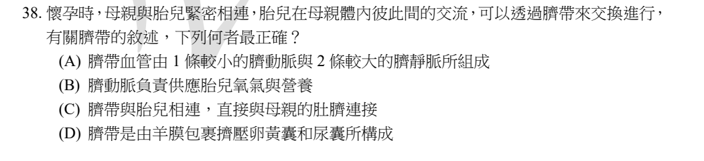
原卷PDF7 · 官方原答案PDF4 · 已核對生物釋疑PDF5–6
官方採計：D 原答案：D
未列於已取得112生物釋疑PDF5–6；依同年度原答案PDF4採計
主分類：Ch47 Animal Development
47.2 / Developmental Adaptations of Amniotes
目錄行3147；條目起始印刷頁1053；實際目錄 PDF48
次分類：Ch46 Animal Reproduction
46.5 / Conception, Embryonic Development, and Birth
目錄行3114；條目起始印刷頁1034；實際目錄 PDF48
主分類理由：臍帶起源涉及羊膜與胚外膜改造，主列47.2羊膜動物的發育適應。
次分類理由：46.5受孕發育與出生保留胎盤、臍帶循環。
科學說明：官方D採計。通常兩臍動脈與一臍靜脈，連胎兒與胎盤而非母親肚臍。D是簡化描述，羊膜包覆連接莖、尿囊與卵黃囊柄等結構；不能理解為整個卵黃囊都成成熟臍帶，母胎血也不直接混流。
來源涵蓋範圍：Campbell支援所列分類框架；具名機制或科學界線由列示原始研究/官方來源補足。
教材正文：印刷1053／PDF1102、印刷1054／PDF1103、印刷1035／PDF1084、印刷1036／PDF1085、印刷1037／PDF1086
補充來源：S16
另行比較：46.5胎盤循環或47.2胚外膜
D問形成，主47.2；46.5支持動靜脈方向及胎盤交換次分類。簡化的卵黃囊描述未作完整臍帶解剖定義。
結論：證據確認，分類疑義已解決。完整覆核紀錄
Q39 · 46.4 / Hormonal Control of Female Reproductive Cycles 正式分類
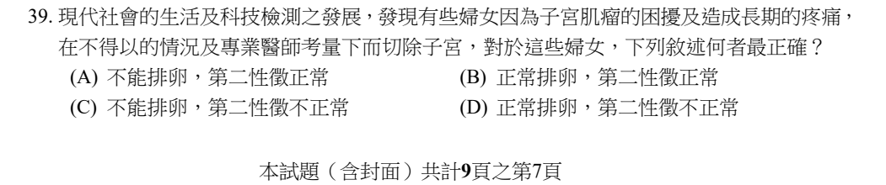
原卷PDF7 · 官方原答案PDF4 · 已核對生物釋疑PDF5–6
官方採計：B 原答案：B
未列於已取得112生物釋疑PDF5–6；依同年度原答案PDF4採計
主分類：Ch46 Animal Reproduction
46.4 / Hormonal Control of Female Reproductive Cycles
目錄行3104；條目起始印刷頁1032；實際目錄 PDF48
次分類：Ch46 Animal Reproduction
46.3 / Human Female Reproductive Anatomy
目錄行3088；條目起始印刷頁1026；實際目錄 PDF48
主分類理由：子宮與卵巢週期及激素功能需分開，主列46.4女性生殖週期的激素調控。
次分類理由：46.3女性生殖構造保留子宮切除與卵巢保留的器官區分。
科學說明：官方B。依題設只切子宮、卵巢功能保留，仍可排卵並維持性激素與第二性徵；不代表有月經或能在子宮懷孕，也不擴為合併卵巢切除的個案。
來源涵蓋範圍：Campbell正文支援分類原理；原題與官方釋疑的假設、資料及措辭限制另見科學說明。
教材正文：印刷1032／PDF1081、印刷1033／PDF1082、印刷1034／PDF1083、印刷1026／PDF1075、印刷1027／PDF1076
補充來源：不需另加課本外具名機制來源
另行比較：器官解剖或內分泌生殖週期
是否排卵/第二性徵以46.4為主，46.3為器官次項；限卵巢功能保留的題設，不將子宮等同雌激素來源。
結論：證據確認，分類疑義已解決。完整覆核紀錄
Q40 · 15.2 / Inheritance of X-Linked Genes 正式分類
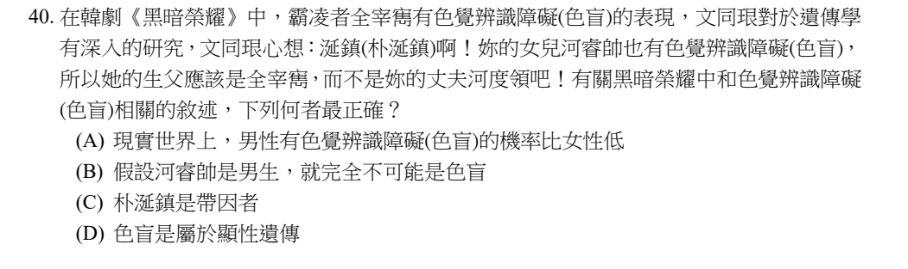
原卷PDF8 · 官方原答案PDF4 · 已核對生物釋疑PDF5–6
官方採計：C 原答案：C
未列於已取得112生物釋疑PDF5–6；依同年度原答案PDF4採計
主分類：Ch15 The Chromosomal Basis of Inheritance
15.2 / Inheritance of X-Linked Genes
目錄行945；條目起始印刷頁299；實際目錄 PDF39
主分類理由：依女兒色覺障礙推論母親帶因，主列15.2X連鎖遺傳。
次分類理由：劇情只是情境，沒有另外考視覺生理，不加50章。
科學說明：官方C。典型X連鎖隱性紅綠色盲模型，患病女兒需父親提供致病X且母親也提供；正常母親為帶因者。題未完整列明母親表型，亦不能用劇情推論取代真實親子鑑定；色盲不全部都是此遺傳型式。
來源涵蓋範圍：Campbell正文支援分類原理；原題與官方釋疑的假設、資料及措辭限制另見科學說明。
教材正文：印刷299／PDF348、印刷300／PDF349
補充來源：不需另加課本外具名機制來源
另行比較：視覺生理或伴性遺傳
推帶因者主15.2，沒有測光受器機制；紅綠色盲模型及母親正常表型假設已另註，劇情不作真實鑑定證據。
結論：證據確認，分類疑義已解決。完整覆核紀錄
Q41 · 27.1 / Cell-Surface Structures 正式分類
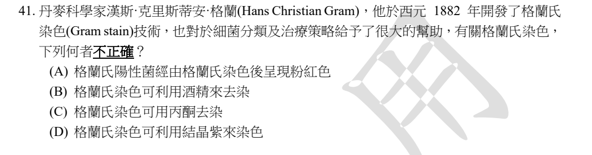
原卷PDF8 · 官方原答案PDF4 · 已核對生物釋疑PDF5–6
官方採計：A 原答案：A
未列於已取得112生物釋疑PDF5–6；依同年度原答案PDF4採計
主分類：Ch27 Bacteria and Archaea
27.1 / Cell-Surface Structures
目錄行1709；條目起始印刷頁574；實際目錄 PDF42
主分類理由：革蘭氏染色對比細菌細胞壁組成，主列27.1細胞表面結構。
次分類理由：染色不是辨識一般顯微鏡操作，無另加6章。
科學說明：官方A為不正確選項。陽性菌通常紫色，陰性菌對比染色為紅粉色，酒精或丙酮可作脫色劑。原題1882與ASM記載1884不同，保留原年而另存史實差異。
來源涵蓋範圍：Campbell支援所列分類框架；具名機制或科學界線由列示原始研究/官方來源補足。
教材正文：印刷574／PDF623、印刷575／PDF624
補充來源：S17
另行比較：顯微技術或細菌壁結構
陽陰性著色源於細胞壁，27.1為最直接條目；ASM支持乙醇/丙酮並記1884，原題1882照留。
結論：證據確認，分類疑義已解決。完整覆核紀錄
Q42 · 50.2 / Hearing and Equilibrium in Mammals 正式分類
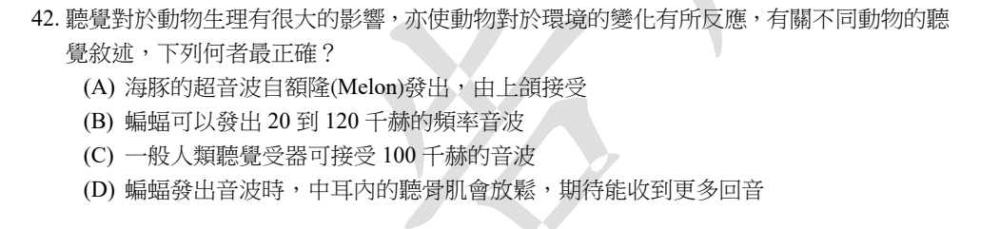
原卷PDF8 · 官方原答案PDF4 · 已核對生物釋疑PDF5–6
官方採計：B 原答案：B
未列於已取得112生物釋疑PDF5–6；依同年度原答案PDF4採計
主分類：Ch50 Sensory and Motor Mechanisms
50.2 / Hearing and Equilibrium in Mammals
目錄行3351；條目起始印刷頁1112；實際目錄 PDF49
主分類理由：跨哺乳類的聲頻與聽覺生理比較，主列50.2哺乳動物聽覺與平衡。
次分類理由：回聲定位不等於個體間溝通，移除預選51.1動物訊號次分類。
科學說明：官方B。蝙蝠回聲定位頻率依物種與脈衝而異，20–120kHz為題給概括；海豚接收主要涉及下頜，非上頜，人類一般不聽100kHz。蝙蝠發聲時中耳肌收縮可減少自刺激，非放鬆。
來源涵蓋範圍：Campbell支援所列分類框架；具名機制或科學界線由列示原始研究/官方來源補足。
教材正文：印刷1112／PDF1161、印刷1113／PDF1162、印刷1114／PDF1163、印刷1115／PDF1164、印刷1116／PDF1165
補充來源：S18
另行比較：聽覺或動物溝通
回聲定位是聲感覺與主動探測，主50.2，移除51.1次項；研究支持自發聲中耳肌收縮及不同頻率，20–120不當所有蝙蝠硬上限。
結論：證據確認，分類疑義已解決。完整覆核紀錄
Q43 · 51.2 / Learning 正式分類
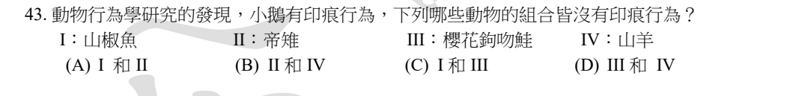
原卷PDF8 · 官方原答案PDF4 · 已核對生物釋疑PDF5–6
官方採計：C 原答案：C
未列於已取得112生物釋疑PDF5–6；依同年度原答案PDF4採計
主分類：Ch51 Animal Behavior
51.2 / Learning
目錄行3424；條目起始印刷頁1144；實際目錄 PDF49
主分類理由：判斷印痕這種敏感期學習，主列51.2學習。
次分類理由：不把行为印痕誤列15.5基因組印記，無另加次分類。
科學說明：官方C（I、III）照採，112釋疑未列本題。小鵝例是親子跟隨印痕；鮭魚還有嗅覺印痕，陸封不等於無印痕。已讀證據未直接證明山椒魚與櫻花鉤吻鮭皆無任何印痕；其他鮭魚研究不能直接推翻指定物種。命題範圍未獲證實，學習分類本身已確定。
來源涵蓋範圍：Campbell支援所列分類框架；具名機制或科學界線由列示原始研究/官方來源補足。
教材正文：印刷1144／PDF1193、印刷1145／PDF1194、印刷1146／PDF1195
補充來源：S19
另行比較：敏感期學習或基因組印記
主51.2學習確定；物種均無印痕的強主張證據不足，維持官方C並標示未確認範圍，未用一般鮭魚替指定物種作結論。
結論：證據確認，分類疑義已解決。完整覆核紀錄
Q44 · 43.2 / B Cell and T Cell Development 正式分類
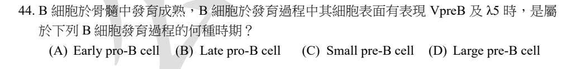
原卷PDF8 · 官方原答案PDF4 · 已核對生物釋疑PDF5–6
官方採計：D 原答案：D
未列於已取得112生物釋疑PDF5–6；依同年度原答案PDF4採計
主分類：Ch43 The Immune System
43.2 / B Cell and T Cell Development
目錄行2889；條目起始印刷頁960；實際目錄 PDF47
次分類：Ch43 The Immune System
43.2 / Antigen Recognition by B Cells and Antibodies
目錄行2883；條目起始印刷頁958；實際目錄 PDF47
主分類理由：由替代輕鏈辨識B細胞發育階段，主列43.2B與T細胞發育。
次分類理由：43.2B細胞與抗體辨識保留受體輕重鏈結構，不能把未成熟替代輕鏈等同成熟抗體。
科學說明：官方D。VpreB與λ5構成替代輕鏈，與μ重鏈組成pre-BCR，典型在large pre-B階段表面表現。其基因轉錄可更早出現；題強調表面表現，不能單憑任一mRNA檢出就判定D。
來源涵蓋範圍：Campbell支援所列分類框架；具名機制或科學界線由列示原始研究/官方來源補足。
教材正文：印刷960／PDF1009、印刷961／PDF1010、印刷962／PDF1011、印刷958／PDF1007、印刷959／PDF1008
補充來源：S20
另行比較：抗體結構或B細胞發育
VpreB/λ5與表面pre-BCR階段主43.2發育，結構為次；較早轉錄與large pre-B表面蛋白區別已由實驗論文核對。
結論：證據確認，分類疑義已解決。完整覆核紀錄
Q45 · 54.1 / Positive Interactions 正式分類
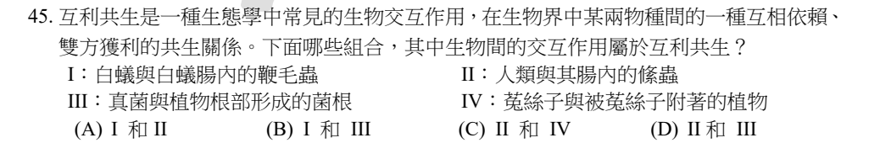
原卷PDF8 · 官方原答案PDF4 · 已核對生物釋疑PDF5–6
官方採計：B 原答案：B
未列於已取得112生物釋疑PDF5–6；依同年度原答案PDF4採計
主分類：Ch54 Community Ecology
54.1 / Positive Interactions
目錄行3604；條目起始印刷頁1220；實際目錄 PDF50
次分類：Ch41 Animal Nutrition
41.4 / Mutualistic Adaptations
目錄行2733；條目起始印刷頁912；實際目錄 PDF46
主分類理由：區分互利與寄生等種間作用，主列54.1正向交互作用。
次分類理由：41.4消化的互利適應保留白蟻腸內微生物案例。
科學說明：官方B（I、III）。白蟻與鞭毛蟲、植物與菌根通常互利；絛蟲與人、菟絲子與宿主為寄生。互利不必一律是雙方離開對方都不能生存，成本效益亦可隨環境改變。
來源涵蓋範圍：Campbell正文支援分類原理；原題與官方釋疑的假設、資料及措辭限制另見科學說明。
教材正文：印刷1220／PDF1269、印刷1221／PDF1270、印刷912／PDF961、印刷913／PDF962、印刷914／PDF963
補充來源：不需另加課本外具名機制來源
另行比較：消化互利或群落種間作用
四組跨消化/植物宿主比較，54.1正向交互作用為主，41.4消化互利作次；互利定義不強制專性依賴。
結論：證據確認，分類疑義已解決。完整覆核紀錄
Q46 · 43.1 / Innate Immunity of Vertebrates 正式分類
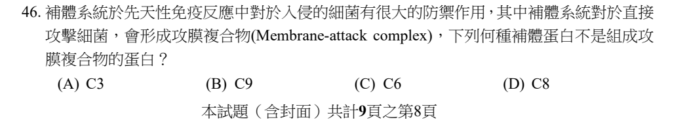
原卷PDF8 · 官方原答案PDF4 · 已核對生物釋疑PDF5–6
官方採計：A 原答案：A
未列於已取得112生物釋疑PDF5–6；依同年度原答案PDF4採計
主分類：Ch43 The Immune System
43.1 / Innate Immunity of Vertebrates
目錄行2870；條目起始印刷頁954；實際目錄 PDF47
次分類：Ch43 The Immune System
43.3 / B Cells and Antibodies: A Response to Extracellular Pathogens
目錄行2899；條目起始印刷頁964；實際目錄 PDF47
主分類理由：先天免疫補體的直接膜攻擊成分，主列43.1脊椎動物先天免疫。
次分類理由：43.3B細胞抗體反應保留抗體啟動補體及細胞溶解的連結。
科學說明：官方A。膜攻擊複合物由C5b、C6、C7、C8及聚合C9組裝，C3參與上游活化及調理而不是MAC結構成分。Campbell提供補體裂解框架，具名組成由結構研究補足。
來源涵蓋範圍：Campbell支援所列分類框架；具名機制或科學界線由列示原始研究/官方來源補足。
教材正文：印刷955／PDF1004、印刷956／PDF1005、印刷964／PDF1013、印刷965／PDF1014、印刷966／PDF1015
補充來源：S21
另行比較：先天補體或抗體反應
直接膜攻擊主43.1，抗體啟动補體作43.3次；結構研究列C5b6/7/8/9，C3為上游而非孔的組成。
結論：證據確認，分類疑義已解決。完整覆核紀錄
Q47 · 10.3 / Linear Electron Flow 正式分類
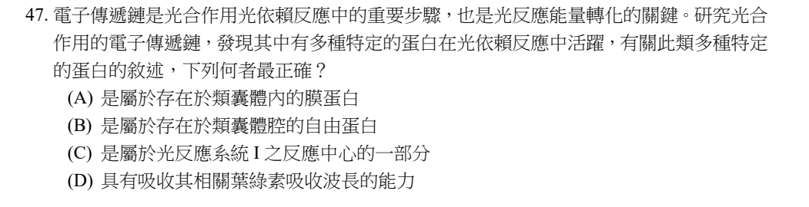
原卷PDF9 · 官方原答案PDF4 · 已核對生物釋疑PDF5–6
官方採計：A 原答案：A
未列於已取得112生物釋疑PDF5–6；依同年度原答案PDF4採計
主分類：Ch10 Photosynthesis
10.3 / Linear Electron Flow
目錄行656；條目起始印刷頁197；實際目錄 PDF37
次分類：Ch10 Photosynthesis
10.3 / A Comparison of Chemiosmosis in Chloroplasts and Mitochondria
目錄行662；條目起始印刷頁199；實際目錄 PDF37
主分類理由：光反應的电子載體與類囊體膜位置，主列10.3線性電子流。
次分類理由：10.3葉綠體與粒線體化學滲透比較保留跨膜質子梯度。
科學說明：官方A為最佳概括。主要複合體在類囊體膜，但不能說所有電子傳遞蛋白均為跨膜蛋白；plastocyanin在腔側移動，ferredoxin在基質側。原A的類囊體內按膜系統解讀，不將其改寫原文。
來源涵蓋範圍：Campbell正文支援分類原理；原題與官方釋疑的假設、資料及措辭限制另見科學說明。
教材正文：印刷197／PDF246、印刷198／PDF247、印刷199／PDF248、印刷200／PDF249
補充來源：不需另加課本外具名機制來源
另行比較：類囊體膜電子流或反應中心
主10.3線性電子流、次化學滲透；A是最佳概括，教材Pc/Fd移動載體例外保留，避免全稱膜蛋白。
結論：證據確認，分類疑義已解決。完整覆核紀錄
Q48 · 6.7 / Cell Junctions 正式分類
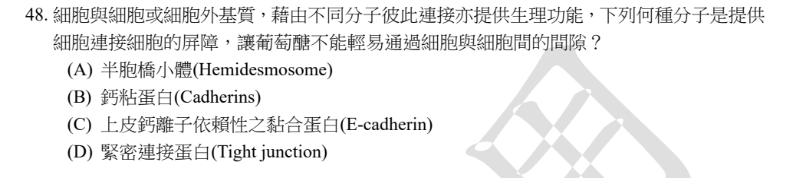
原卷PDF9 · 官方原答案PDF4 · 已核對生物釋疑PDF5–6
官方採計：D 原答案：D
未列於已取得112生物釋疑PDF5–6；依同年度原答案PDF4採計
主分類：Ch06 A Tour of the Cell
6.7 / Cell Junctions
目錄行394；條目起始印刷頁119；實際目錄 PDF36
主分類理由：形成旁細胞通路屏障的結構是緊密連接，主列6.7細胞連接。
次分類理由：同條目已含其他連接類型，不重複另加黏附分子章節。
科學說明：官方D。tight junction是連接結構而非單一蛋白，主要封閉相鄰上皮細胞間隙；不是hemidesmosome或E-cadherin的主要屏障功能。不能將所有上皮緊密連接視為絕對不透任何溶質。
來源涵蓋範圍：Campbell正文支援分類原理；原題與官方釋疑的假設、資料及措辭限制另見科學說明。
教材正文：印刷119／PDF168、印刷120／PDF169
補充來源：不需另加課本外具名機制來源
另行比較：細胞附著或旁細胞屏障
問溶質不易穿間隙，6.7細胞連接中tight junction最直接；結構名與單一蛋白的原文簡化保留。
結論：證據確認，分類疑義已解決。完整覆核紀錄
Q49 · 42.2 / Mammalian Circulation 正式分類
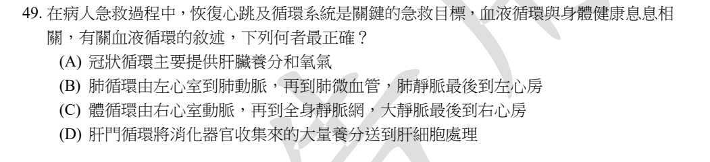
原卷PDF9 · 官方原答案PDF4 · 已核對生物釋疑PDF5–6
官方採計：D 原答案：D
未列於已取得112生物釋疑PDF5–6；依同年度原答案PDF4採計
主分類：Ch42 Circulation and Gas Exchange
42.2 / Mammalian Circulation
目錄行2770；條目起始印刷頁926；實際目錄 PDF46
次分類：Ch41 Animal Nutrition
41.3 / Absorption in the Small Intestine
目錄行2717；條目起始印刷頁909；實際目錄 PDF46
主分類理由：辨識肺、體、冠狀與門脈循環的功能路徑，主列42.2哺乳類循環。
次分類理由：41.3小腸吸收直接說明肝門靜脈把消化吸收養分送肝。
科學說明：官方D。肺循環起於右心室，體循環起於左心室，冠狀循環供應心肌；肝門循環先送吸收物至肝處理。長鏈脂質主要經乳糜管淋巴，不宣稱全部消化吸收物都先經肝門靜脈。
來源涵蓋範圍：Campbell正文支援分類原理；原題與官方釋疑的假設、資料及措辭限制另見科學說明。
教材正文：印刷926／PDF975、印刷927／PDF976、印刷909／PDF958、印刷910／PDF959
補充來源：不需另加課本外具名機制來源
另行比較：42.2循環或41.3吸收
比較各循環路徑主42.2，正確D由41.3肝門靜脈段直接支援；脂質淋巴例外與總體循環分開。
結論：證據確認，分類疑義已解決。完整覆核紀錄
Q50 · 23.3 / Gene Flow 正式分類
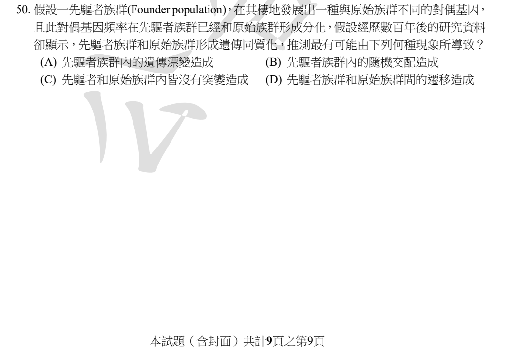
原卷PDF9 · 官方原答案PDF4 · 已核對生物釋疑PDF5–6
官方採計：D 原答案：D
未列於已取得112生物釋疑PDF5–6；依同年度原答案PDF4採計
主分類：Ch23 The Evolution of Populations
23.3 / Gene Flow
目錄行1458；條目起始印刷頁496；實際目錄 PDF41
次分類：Ch23 The Evolution of Populations
23.3 / Genetic Drift
目錄行1455；條目起始印刷頁494；實際目錄 PDF41
主分類理由：族群間遺傳差異減少的直接機制是基因流，主列23.3基因流。
次分類理由：23.3遺傳漂變保留創始效應作為最初分化背景與備選排除。
科學說明：官方D。遷移者成功繁殖使對偶基因在族群間交換，可趨向同質化；單純在各群內隨機交配不均一化群間頻率，創始效應也不等於產生新突變。
來源涵蓋範圍：Campbell正文支援分類原理；原題與官方釋疑的假設、資料及措辭限制另見科學說明。
教材正文：印刷494／PDF543、印刷495／PDF544、印刷496／PDF545、印刷497／PDF546
補充來源：不需另加課本外具名機制來源
另行比較：創始效應、隨機交配或基因流
同質化主因為有繁殖的遷移即23.3基因流；漂變保留分化背景次項，不把創始效應當新突變來源。
結論：證據確認，分類疑義已解決。完整覆核紀錄
目前篩選沒有符合的題目；本年度總數仍為50題。
補充來源
查證日期：2026-09-09。使用原始研究摘要及官方資料，不宣稱所有出版商全文已取得。詳細界線見來源紀錄。
- S01 NOAA：NEE符號、El Niño與CO2時間尺度
NOAA通量以向大氣為正，NEE含呼吸與光合負通量；暖相上升流減弱。題Q1的30%為原題估計，不由此組保證精確數字；Q28年代差異另由本地教材1278圖核對。
實讀範圍：已讀NOAA搜尋返回的NEE公式與ENSO機制節錄；CO2趨勢入口為延伸資料，數值核對以本地教材圖為本輪實讀證據。
原始來源1 · 原始來源2 · 原始來源3 - S02 病毒附著蛋白與錯置配對的原始研究
腺病毒fiber負責宿主表面受體附著；HIV gp120結合CD4。Campbell提供病毒表面蛋白與受體框架。 原始EBV受體研究確認gp350/220；輪狀病毒cryo-EM研究確認外層VP7，支持排除題中錯置的病毒配對。
實讀範圍：已讀原始fiber研究摘要節錄與NCBI Retroviruses受體章gp120/CD4段節錄；未宣稱完整章或全文已讀。 封存前再實讀EBV gp350/220原始研究完整摘要與輪狀病毒VP7結構研究摘要節錄，未宣稱後者完整摘要或全文。
原始來源1 · 原始來源2 · 原始來源3 · 原始來源4 - S03 疱疹病毒基因組、傳播與CMV核內包涵體
HCMV不同株基因組約229–238kb；教材及原始病理個案記CMV Cowdry A核內包涵體。原始研究證明直接細胞間傳播；抗體抑制程度隨病毒株、抗體、細胞與實驗定義而異，不推成完全不受抗體影響。核內複製及包膜另由Campbell405–406頁支援。
實讀範圍：已讀基因組Results/表1節錄、NCBI Pathogenesis CMV段、1981病理研究摘要節錄；不將歷史臨床數字作現行醫療建議。 另實讀2017原始研究傳播/中和實驗節錄與2022原始研究完整摘要及cell-associated spread定義段；未宣稱全部正文閱讀。
原始來源1 · 原始來源2 · 原始來源3 · 原始來源4 · 原始來源5 - S04 ICTV：Parvoviridae及B19股極性
B19為線性ssDNA；ICTV分類提案將約等量正負封裝股明列為+/-。正負指核酸股方向而非可直接翻譯。
實讀範圍：已讀家族描述、表與2013提案的genome欄說明節錄；提案屬歷史分類文件，未拿舊物種名冒稱現行命名。
原始來源1 · 原始來源2 - S05 Foxman等：鼻病毒溫度依賴宿主防禦
許多人類鼻病毒株在鼻腔33–35°C比37°C複製旺盛，研究支持溫度依賴先天免疫作用；不宣稱所有株完全一致。
實讀範圍：已讀摘要的33–35/37°C、MAVS/IFN反應節錄，未讀完整實驗正文。
原始來源1 - S06 CD4亞群的四個主控轉錄因子原始研究
Foxp3支持Treg，T-bet支持Th1，GATA3支持Th2，RORγt支持Th17；經典模型與亞群可塑性須區分。
實讀範圍：已讀Foxp3與T-bet完整摘要、GATA3研究題名及摘要開頭、RORγt研究返回節錄及人類Th17研究摘要；不宣稱五篇全文已讀。誤試9039265未取得可用內容，未列證據。
原始來源1 · 原始來源2 · 原始來源3 · 原始來源4 · 原始來源5 - S07 CDC：IPV與OPV免疫差異
IPV為不活化，OPV為口服活疫苗且可誘發較強黏膜免疫；IPV腸道免疫有限。
實讀範圍：已讀CDC網頁及ACIP簡報搜尋節錄，未宣稱全份簡報視覺閱讀。
原始來源1 · 原始來源2 - S08 Fendrych等：auxin可快速抑制根生長
原始研究直接報告TIR1 auxin訊號造成快速可逆根生長抑制，限制Q23未指定濃度下必伸長的全稱判斷。
實讀範圍：已讀已定位原始研究題名及研究摘要搜尋節錄；一般濃度依賴原理另以本地Campbell848頁實讀支援。
原始來源1 - S09 FDA Tamiflu標示：神經胺酸酶靶點
Oseltamivir carboxylate抑制流感neuraminidase而影響病毒顆粒釋放。
實讀範圍：已讀官方PDF Mechanism of Action搜尋節錄；未宣稱整份PDF閱讀或現行療程建議。
原始來源1 - S10 Lentz等1982：狂犬病毒與ACh受體
經典實驗支持狂犬病毒與乙醯膽鹼受體部位附著相關，不足以證明所有宿主細胞唯一必需受體。
實讀範圍：已讀研究題名及鼠橫膈/雞肌管分布摘要節錄；未宣稱全文讀取。
原始來源1 - S11 Davison等2016：螺手性與formin
原始研究將formin與池塘螺左右不對稱、母源表現及細胞骨架連結；支援母體效應/卵裂分類框架。
實讀範圍：已讀研究題名、maternal expression圖說及返回研究節錄；直接開PubMed未返回正文，不宣稱完整摘要或全文。
原始來源1 - S12 ICTV：Caliciviridae/Norovirus結構
杯狀病毒科為無包膜正股RNA病毒，屬列表含Norovirus，補足Campbell表19.1未列的Norwalk。
實讀範圍：已讀官方家族表的Virion、Genome及屬名列表。
原始來源1 - S13 ICTV：Poxviridae胞質複製
痘病毒為大型dsDNA病毒，在胞質進行複製；NCLDV總括介紹不等於每個成員都必經核。
實讀範圍：已讀官方家族特性與複製描述節錄。
原始來源1 - S14 腺病毒E3/19K滯留MHC-I的原始研究
E3/19K在ER滯留MHC-I，減少細胞表面運輸與CD8辨識；E19為原題名稱。
實讀範圍：已讀兩篇研究摘要節錄，未讀出版商全文。
原始來源1 · 原始來源2 - S15 Scally等2012：大猩猩基因組與ILS
原始研究比較人、黑猩猩、大猩猩基因組，局部基因譜系跨位點改變，支持祖先多型及不完整譜系排序。
實讀範圍：已讀Nature搜尋返回Incomplete lineage sorting and selection段節錄及圖2標題；後續直接開啟失敗，未宣稱全文取得。
原始來源1 - S16 臍帶形成與胚外膜的形態研究
羊膜、連接莖、尿囊/卵黃囊柄共同涉及臍帶形成；本地Campbell提供胚外膜及胎盤循環主要證據。
實讀範圍：已讀UNSW收錄1939原始形態論文的形成段節錄；標明歷史研究，未宣稱現代臨床指南。
原始來源1 - S17 ASM：革蘭氏染色程序及歷史
結晶紫、碘、酒精/丙酮脫色、safranin對比染色；ASM記開發年份1884，與原題1882差異保留。
實讀範圍：已讀官方程序四步驟及歷史年份節錄。
原始來源1 · 原始來源2 - S18 蝙蝠中耳肌、聲頻與海豚下頜聽覺研究
發聲時中耳肌活動可減少自刺激；研究分別記約20kHz末端與120kHz諧波，不能把20–120kHz當全部物種固定頻段。 瓶鼻海豚遮蔽下頜頦孔區會提高聽閾，瑞氏海豚聲音接收實驗亦支持下頜路徑；具體路徑與靈敏部位可有物種差異。
實讀範圍：已讀中耳肌原始摘要、兩份聲頻結果節錄、2016下頜遮蔽研究完整摘要及2015瑞氏海豚聽覺研究摘要節錄；未宣稱Campbell具名涵蓋或全部研究全文已讀。
原始來源1 · 原始來源2 · 原始來源3 · 原始來源4 · 原始來源5 - S19 陸封大西洋鮭嗅覺印痕研究的物種界線
研究在陸封大西洋鮭亦找到早期印痕線索，足以反對陸封便無印痕的一般推論；不代表櫻花鉤吻鮭或山椒魚已得到相同實驗結果。
實讀範圍：已讀大學典藏原始學位研究摘要節錄；沒有指定兩物種皆無印痕的直接證據，因此保留Q43命題未確認界線。
原始來源1 - S20 pre-BCR與VpreB/λ5轉錄的原始研究
原始RNA FISH及受體缺陷小鼠研究比較pre-BI、large pre-BII、small pre-BII；替代輕鏈轉錄與表面pre-BCR表現階段需區分。
實讀範圍：已讀摘要與研究返回RNA FISH結果節錄；不宣稱整篇全文精讀。
原始來源1 - S21 Serna等2016：膜攻擊複合物結構
Cryo-EM結構列C5b、C6、C7、C8各鏈與C9，C3不在MAC孔的結構組成。
實讀範圍：已讀原始研究摘要、圖1成分圖說及auxiliary domains節錄。
原始來源1 · 原始來源2